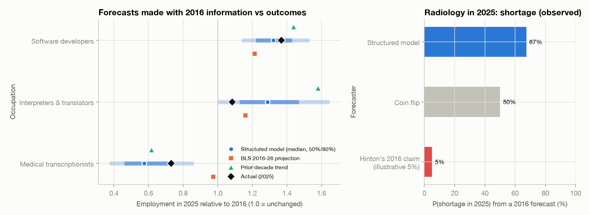
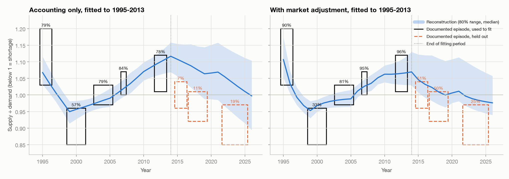
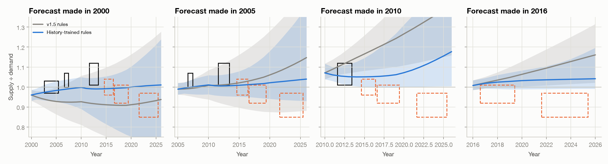
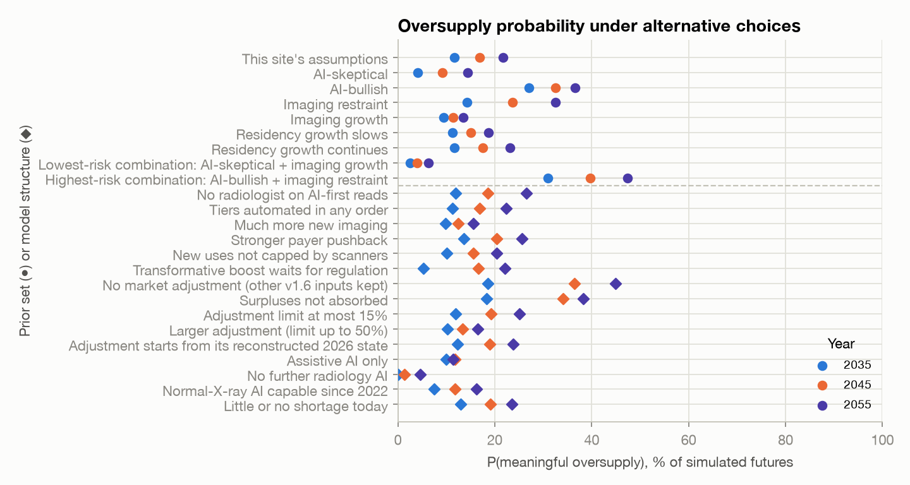
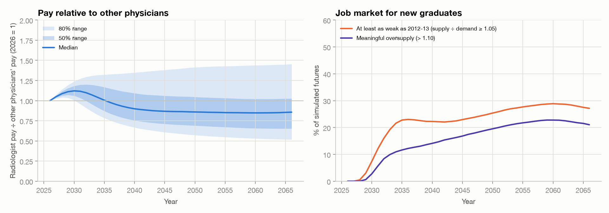

Will AI Shrink the Radiology Job Market?
A probabilistic forecast of the U.S. diagnostic-radiology workforce, 2026–2066
For anyone considering, training in, or early in a career in diagnostic radiology · Version 1.6 · October 2026 · Interactive version: https://ethanuser.github.io/radiology/ · Code and data: this repository
How to read this document. Every number is produced by the Monte Carlo model in
model/and inserted bytools/build_docs.py; re-running the model regenerates the report. Superscript section marks (for example §4.3) link each claim to the method or evidence behind it, and numbered superscripts link to references. Each reference has ↩ links back to every place it is cited, and your browser's Back button returns you to where you were. The model and text were drafted with an AI assistant (Claude, Anthropic) from the cited sources and should be read critically. This is a forecast, not career, financial or medical advice. The probabilities are conditional on the model's assumptions: read them as structured, model-based judgment (a scenario analysis with explicit weights), not as a calibrated statistical forecast. §8.4 shows how much they move under alternative assumptions and model structures.
Summary
Question. Diagnostic radiology is the specialty most often named as a likely casualty of AI. For someone choosing the specialty now, or already training in it, what will the market for radiologists' labor look like when they enter practice and over the following decades? How much does AI change it?
Approach. We built a probabilistic model with five separately specified components: baseline imaging demand, task-level AI productivity, the regulatory and adoption pipeline for autonomous AI, Jevons/rebound effects, and a cohort model of radiologist supply with an endogenous residency response.§4 Its 68 uncertain inputs are drawn from explicit probability distributions, correlated through three latent factors (AI progress, regulatory friction, appetite for imaging), and propagated through 20,000 simulated futures, of which the 18,697 not already contradicted by events are kept (§10).§4.6 Version 1.6 adds a market adjustment fitted to radiology's own job market since 1995 and checked on held-out years (§4.7, §6.3).§6.3 Each input is graded empirical (E), anchored (A: an empirical anchor plus judgment) or subjective (S).§5
Headline results (median with 10th–90th percentile range; indices relative to 2026):
| Metric | 2030 | 2035 | 2045 | 2055 | 2066 |
|---|---|---|---|---|---|
| FTE demand (2026 demand = 1): median (P10–P90) | 0.98 (0.92–1.04) | 1.00 (0.90–1.07) | 1.12 (0.84–1.26) | 1.19 (0.78–1.45) | 1.25 (0.77–1.69) |
| FTE demand: P25–P75 | 0.95–1.01 | 0.96–1.03 | 1.05–1.17 | 1.07–1.29 | 1.06–1.43 |
| FTE supply (2026 demand = 1): median (P10–P90) | 0.97 (0.93–1.00) | 1.01 (0.98–1.05) | 1.12 (1.05–1.19) | 1.19 (1.03–1.34) | 1.25 (0.94–1.54) |
| FTE supply: P25–P75 | 0.95–0.98 | 0.99–1.03 | 1.09–1.16 | 1.12–1.27 | 1.12–1.39 |
| Supply ÷ demand (2026 ≈ 0.94): median (P10–P90) | 0.98 (0.93–1.04) | 1.02 (0.95–1.12) | 1.01 (0.91–1.30) | 1.01 (0.89–1.34) | 1.00 (0.86–1.24) |
| Supply ÷ demand: P25–P75 | 0.96–1.01 | 0.99–1.05 | 0.99–1.04 | 0.99–1.07 | 0.98–1.07 |
| AI productivity (work per radiologist-hour, 2026 = 1) | 1.06 (1.02–1.19) | 1.21 (1.09–1.73) | 1.37 (1.21–2.68) | 1.46 (1.28–3.47) | 1.54 (1.32–3.62) |
| AI productivity: P25–P75 | 1.03–1.10 | 1.14–1.30 | 1.28–1.49 | 1.35–1.61 | 1.41–1.72 |
| AI-first / autonomous share of interpretive work | <1% (<1%–2%) | 2% (<1%–9%) | 12% (3%–46%) | 24% (8%–80%) | 44% (16%–95%) |
| AI-first share: P25–P75 | <1%–1% | <1%–4% | 6%–20% | 15%–44% | 25%–57% |
| P(demand < 2026 level) | 68% | 51% | 17% | 19% | 20% |
| P(demand < 80% of 2026) | <1% | 5% | 9% | 11% | 11% |
| P(demand < 50% of 2026) | 0% | <1% | 2% | 3% | 3% |
| P(supply > demand) | 32% | 66% | 62% | 64% | 56% |
| P(meaningful oversupply: S/D > 1.10) | 3% | 12% | 17% | 22% | 21% |
| P(surplus of 10%+ before the market adjustment) | 2% | 18% | 34% | 41% | 43% |
| P(meaningful oversupply) if surpluses are not absorbed (§8.4) | 3% | 18% | 34% | 38% | 33% |
| P(severe oversupply: S/D > 1.25) | <1% | 5% | 11% | 13% | 9% |
| P(shortage worse than 10%: S/D < 0.90) | 3% | 4% | 9% | 11% | 13% |
The pre-adjustment row counts surpluses before the market adjustment. It is below the headline in 2030 because by then the adjustment has shifted a median 6% of radiologist work away from radiologists during today's shortage, and that work has not yet returned.
Key findings
- Over the next decade today's shortage most likely eases into rough balance. Radiologists who will practice in 2035 have mostly already matched or started medical school, imaging keeps growing with an aging population, and the job market has historically corrected imbalances within a few years (§6.3). The median supply/demand ratio in 2035 is 1.02 (below 1 means a shortage). Meaningful oversupply (more than 10% excess radiologist capacity) has probability 12% in 2035 and a meaningful shortage 4%; most of the oversupply risk sits in a "transformative AI" branch with a 12% prior, and outside it the risk is 2%. Much of the easing comes from the assumed market adjustment, which by 2030 has shifted a median 6% of radiologist work to other physicians and to faster labor-saving change (§4.7); the workforce projections that see a lasting shortage leave this out.§7.2§7.5
- Long-run risk is moderate and concentrated in very fast AI. Median FTE demand rises +12% by 2045 and +19% by 2055, because AI productivity absorbs much of the growth in imaging. Meaningful oversupply has probability 17% in 2045 and 22% in 2055; a slight surplus is common ($R>1$ in 62% of futures in 2045) because the market adjustment absorbs moderate imbalances. Those figures assume surpluses are absorbed the way the history fit suggests; if the market absorbed shortages but not surpluses, meaningful oversupply would be 34% in 2045 and 38% in 2055. Before the market adjusts, a surplus of 10% or more arises in 34% of futures in 2045. Outside the transformative branch, meaningful oversupply is 7% likely in 2045 and 13% in 2055. With no further AI it would be 1% and 5%; with assistive AI but no AI-first reading, 12% and 11%.§7.1
- A collapse is a tail, not a base case. Demand falls below half of today's level with probability 2% in 2045 and 3% in 2066, almost entirely in transformative-AI worlds.§7.5
- AI productivity is real but slow to be realized. Median time saved per unit of imaging work is 17% in 2035 and 31% in 2055. AI-first or autonomous reading reaches a median 12% of interpretive work by 2045. For each tier of exam difficulty, the chain from technical capability to clinical validation, FDA authorization, liability and payment acceptance, and hospital adoption takes one to two decades by assumption (the lag priors in §4.3, anchored on past diffusion); it is an input, not a finding.§7.3§4.3
- A true Jevons paradox is unlikely under the main assumptions, but this depends on the demand channels assumed. AI-induced demand (cheaper and faster reads, new applications, follow-up of AI-detected findings, scanner throughput, new radiologist tasks) offsets a median 51% of the labor AI saves by 2045 and exceeds it in only 4% of simulated futures. If AI creates three times as many new imaging uses (and twice the new radiologist tasks) as assumed, that rises to 29%.§7.4§8.4
- What drives the forecast: the AI-progress regime, then per-person imaging growth, then the market adjustment and the size of assistive-AI time savings. Most of the spread comes from inputs graded subjective.§8
- A surplus would most likely be felt as lower pay relative to other physicians and a weaker market for new graduates, not unemployment. In a readout calibrated on radiology's pay history (§9.2), median pay relative to other physicians is 0.87 times its 2026 level in 2045 (80%: 0.61–1.38), as today's shortage premium erodes, and a job market at least as weak as 2012–13 has probability 23% in 2045. Fitted on 2001–2014, the pay readout is consistent with the held-out 2022–2025 surge (+3.4%/yr against about +4%/yr), but only after the earlier pay data were recoded (under the first coding it fell well short); it rests on few, mild imbalances, so treat pay figures as rough. A severe surplus ($R>1.25$) lasting five or more years at some point before 2066 occurs in 15% of futures (6% outside the transformative branch).§9.2
- Radiology's own history is the main validation, and it changed the model. Fitted to the documented job market of 1995–2013, the model's accounting alone gave the held-out 2015–2025 recovery and shortage little probability. Adding a market adjustment, in which work shifts between radiologists and others and labor-saving change speeds up or slows down, predicted them much better, mainly by pulling the market back toward balance; the history shows the adjustment is at least moderately fast and large but cannot bound it from above. Its surplus side rests mostly on the 2013–2018 recovery, and the mechanism in that direction is assumed rather than observed. Removing the adjustment while keeping v1.6's other inputs raises the 2045 oversupply probability to 36%. Forecasts made from past start years improved too, but on the held-out years they still lost to two naive forecasts, "always balanced" and persistence; there are only three held-out episodes, two of them near balance. For three other occupations a simple average of official projections and trends beat the full method.§6.3§6.2
- The direction is robust; the exact numbers are not. Under 8 alternative prior sets (two of them combinations) and 13 alternative model structures (including weaker or no market adjustment, reads with no radiologist, automation that does not follow a difficulty ladder, and little or no shortage today), the 2045 oversupply probability ranges from 9% to 36% (main model 17%); changing the AI and imaging priors together widens this to 4%–40%. Every variant agrees that oversupply risk is lower in 2035 than later. The largest single movers are the AI-progress priors and whether surpluses are absorbed.§8.4
By career stage (details in §9§9):
| Where you are in fall 2026 | Typical first attending year* | P(meaningful oversupply) when you start | 10 years in | 20 years in | 30 years in (or 2066) | P(demand below 2026) 10 years in | P(meaningful shortage) when you start |
|---|---|---|---|---|---|---|---|
| Pre-med (college junior) | 2038 | 13% | 18% | 23% | 21% (2066) | 17% | 6% |
| Medical student, year 1 | 2036 | 12% | 17% | 22% | 21% (2066) | 17% | 5% |
| Medical student, year 2 | 2035 | 12% | 17% | 22% | 22% (2065) | 17% | 4% |
| Medical student, year 3 | 2034 | 11% | 16% | 21% | 22% (2064) | 17% | 4% |
| Medical student, year 4 | 2033 | 10% | 16% | 21% | 22% (2063) | 17% | 3% |
| Intern (PGY-1) | 2032 | 8% | 15% | 21% | 23% (2062) | 17% | 3% |
| Radiology resident, R1 | 2031 | 6% | 15% | 20% | 23% (2061) | 18% | 3% |
| Radiology resident, R2 | 2030 | 3% | 14% | 20% | 23% (2060) | 20% | 3% |
| Radiology resident, R3 | 2029 | 1% | 14% | 19% | 23% (2059) | 23% | 3% |
| Radiology resident, R4 | 2028 | <1% | 13% | 18% | 23% (2058) | 28% | 2% |
| Fellow | 2027 | 0% | 13% | 18% | 22% (2057) | 35% | 2% |
| Practicing radiologist | 2026 | 0% | 12% | 17% | 22% (2056) | 43% | 6% |
*Assumes a 1-year fellowship; subtract one year without it.
1. Question, scope and definitions
Population. U.S. diagnostic radiologists. Supply is calibrated to the Harvey L. Neiman Health Policy Institute count of 37,482 radiologists enrolled to serve Medicare patients in 2023 1, a broader definition than the AAMC's 28,618 "radiology and diagnostic radiology" physicians 2. All outputs are indices relative to 2026, so the definitional difference matters mainly through the ratio of entrants to the existing stock.
Career timelines. The stage table above shows when people at each stage in 2026 would typically start independent practice: a pre-med around 2038, a first-year medical student around 2035–2036, a current R1 around 2031. The forecast reports calendar years. Read across to your own start year.
Definitions.
- FTE demand $D(t)$: radiologist full-time equivalents needed to perform the imaging work demanded of radiologists in year $t$, given the AI in use and after the market adjustment (§4.7), as an index with $D(2026)=1$. It includes work that is currently backlogged or outsourced.
- FTE supply $S(t)$: practicing radiologists × FTE per head, as an index with $S(2026)=1$.
- Supply/demand ratio $R(t)$, in absolute FTEs. Today's market is short: $R(2026)$ ≈ 0.94 (range 0.88–0.99).§4.1 Meaningful oversupply is $R>1.10$, a convention for a clearly noticeable surplus. For scale, the history reconstruction (§6.3) puts the 2012–13 market, when new graduates struggled to find jobs 3,4, at about 1.05, so meaningful oversupply is about twice that surplus. We also report $P(R>1)$. Severe oversupply is $R>1.25$.
- AI productivity $P(t)$: imaging work completed per radiologist-hour relative to 2026. Time saved is $1-1/P$.
- AI-first/autonomous share: share of interpretive work where AI is the primary reader and the radiologist audits, signs off or handles escalations.
2. Forecasting approach: outside view first
We follow practices that distinguish accurate forecasters in tournaments: decompose the question, start from base rates (the "outside view"), state explicit probabilities with wide intervals, and name the observations that should move the forecast 5-8. Four reference classes anchor the priors.
- Confident predictions that AI would displace radiologists have so far failed. In 2016 Geoffrey Hinton said that people "should stop training radiologists now" 9. A decade later, diagnostic-radiology programs offered a record 1,241 positions with a 97.6% fill rate 10, and average radiology compensation rose 6.6% in the latest annual survey 11. The FDA lists more than 1,600 AI-enabled devices, about three-quarters in radiology 12, but claims data show clinical use concentrated in a handful of products 13. Langlotz's framing since 2019 has been that AI changes the work rather than replacing the worker 14,15.
- The radiology labor market cycles with supply and utilization shocks. After the mid-1990s downturn, radiology trainee numbers fell to a nadir of 3,080 in 1997 and then rose 84% by 2011 16. Positions kept expanding despite a softening job market, and the market was oversupplied by the mid-2010s 17. In the 2015 Match only 86% of advanced DR positions filled and U.S. graduates took 67% of matched positions 18. Students respond to market signals within a few years 19,20.
- Clinical technology diffuses only after payment and liability are resolved, and then it can diffuse quickly. Mammography computer-aided detection (FDA 1998, Medicare payment 2002) was used for most U.S. screening mammograms within a few years, despite no measurable accuracy benefit 21. Hospital EHR adoption passed 50% about four years after the 2009 HITECH subsidies 22. Autonomous diabetic-retinopathy AI took three years from FDA authorization (2018) to a payable CPT code 23.
- Automation economics. In the task framework, automation displaces labor from automated tasks, raises demand through productivity, and can reinstate labor through new tasks 24,25. Whether employment rises depends on demand elasticity, which was high early in industrialization and fell as demand saturated 26. Most of today's U.S. employment is in job specialties created after 1940 27. Whether automation raises or lowers wages depends on whether it removes the expert or the inexpert parts of a job 28. The idea that efficiency can increase total use goes back to Jevons 29.
AI-progress inputs. METR's measured task horizons for frontier models doubled about every seven months from 2019 to 2024 30, and faster after 2023 31. AI 2027 sketches very rapid progress 32. A survey of 2,778 AI researchers put even odds on machines outperforming humans at every task by 2047, but on full automation of occupations only by 2116 33. Expert and superforecaster panels assign far lower probabilities to near-term transformative AI than industry leaders do 34,35. We use these sources only to weight four AI-progress regimes and to scale when radiology capabilities arrive.§4.6 None of them is a forecast about medicine.
2.1 Ways to forecast a job market, and why this one
There are several ways to answer "will there be jobs?", each with a track record.
| Approach | Strength | Weakness | Evidence on accuracy |
|---|---|---|---|
| Ask a domain expert or a famous thinker | Rich context, fast | Overconfident; experts rarely beat informed generalists on long-range questions | In 20 years of tracked political and economic forecasts, specialists did no better than generalists, and "hedgehogs" with one big idea did worst 36. Hinton's 2016 call on radiology 9 |
| Aggregate many forecasters (superforecasters, prediction markets) | Best record on 1–2 year questions | Few long-horizon or niche questions; thin markets | Teams of trained forecasters beat individuals and intelligence analysts 5,6; markets aggregate dispersed information well 8,37. In a 2022 tournament, superforecasters and domain experts had nearly identical overall accuracy, and both underestimated AI benchmark progress, superforecasters more so (9.7% vs 24.6% average probability on what happened); the median of all forecasts beat individuals 38 |
| Extend the trend / reference-class base rates | Simple, hard to beat over short horizons | Misses turning points | The "outside view" corrects planning optimism 7; simple statistical methods were competitive in the M4 competition 39 |
| Official projections (BLS) | Careful, occupation-level, public | Assume slow technology change | BLS projected +14% for medical transcriptionists over 2006–16; employment fell 41% 40,41 |
| Task-exposure indices | Rank which jobs are exposed | No timing, regulation or demand response | Frey & Osborne ranked transcription as highly automatable and software as not 42; LLM exposure estimates 43 |
| Scenarios | Make tails concrete | No probabilities | AI 2027 32 |
| Structured probabilistic model (this report) | Decomposes the question into parts with evidence; keeps every assumption explicit; outputs probabilities that can be updated | Only as good as its subjective inputs; can create false precision | Combining forecasts usually beats choosing one 39,44; backtests in §6.2–6.3§6.3 |
We use the structured model as the main tool, but borrow from the others: base rates set the priors (§2), official projections and trends enter the backtest baseline, radiology's own history calibrates the market adjustment (§6.3), AI forecasts weight the regimes, and the signposts in §9.3 are designed for updating, as superforecasters do. No method has a good record at 20–40-year horizons, so the long-range probabilities in this report should be read as structured judgment, not measurement.
3. Recent evidence (2024–2026)
For a general overview of what AI can and cannot yet do compared with radiologists, see the review by Rajpurkar and Lungren in the New England Journal of Medicine 45 and Mousa's accessible essay on why AI has not replaced radiologists 15. This section summarizes the empirical work most relevant to the model's least certain components. Full texts of RSNA and open-access journals were reviewed. For some Elsevier journals (including JACR), figures come from abstracts because full-text access was blocked for automated reading.
3.1 How much time does AI save radiologists today?
| Study | Setting and design | Measured effect on radiologist time |
|---|---|---|
| Huang et al, 2025 46 | 23,960 radiographs, live deployment, 12 hospitals | 15.5% faster documentation; no loss of accuracy |
| Hong et al, 2025 47 | 758 chest radiographs, 5 readers, reader study | Reading time 34.2 s → 19.8 s (−42%) |
| Li et al, 2026 48 | LLM impressions, 42 hospitals, blinded comparison | −0.46 min per report; impressions non-inferior in 69% |
| Liu et al, 2026 49 | 185,044 chest CT reports, 2 hospitals, retrospective | No sustained efficiency gain at one of two sites |
| Tanno et al, 2025 50 | AI chest-radiograph reports vs radiologists | AI report preferred or equivalent in 77.7% (94% of normal cases); clinically significant errors in 22.8% of AI-only vs 14.0% of human-only reports |
| Wenderott et al, 2024 51 | Meta-analysis of real-world AI deployments | 67% of studies reported time reductions; pooled effects not significant |
| Yu et al, 2024 52 | 140 radiologists, 15 chest-radiograph tasks | Effects of AI assistance highly heterogeneous; erroneous AI output hurt performance |
| Lauritzen et al, 2024 53 | Danish screening program before vs after AI | 33.5% fewer screening reads; higher cancer detection, lower recall |
| MASAI, 2023–2026 54-56 | 105,934 women, randomised | 44% lower screen-reading workload; 29% more cancers detected; interval cancers non-inferior (rate ratio 0.88) |
The screening savings come from replacing the second reader in European double reading, a substitution effect that does not transfer to single-read U.S. practice; we use them only to size tier 1, not to set assistive ceilings. The evidence supports large savings on drafting and in screening programs, modest and heterogeneous savings on interpretation, and little measured effect at system scale so far.§4.2
3.2 How much work could be read autonomously? A commercial tool could autonomously report 28% of normal posteroanterior chest radiographs (7.8% of all) with 99.1% sensitivity for abnormal films 57. With a tuned threshold, about 47% of unremarkable films (roughly 17.5% of all chest radiographs) could be excluded at 99% sensitivity 58. An autonomous normal-chest-radiograph product has held EU CE Class IIb marking since 2022 59. In the U.S., no autonomous radiology read is FDA-authorized as of October 2026 12. Generative chest-radiograph drafting tools received FDA Breakthrough designations in 2026, and a cleared breast-ultrasound tool generates reports under radiologist control 60,61. FDA's AI lifecycle guidance remains a draft 62. Of FDA-authorized AI devices, 43% had no published clinical validation and about 4% had randomized evidence 63. Liability rules are unsettled 64, and mock jurors judge radiologists more harshly when they miss something AI flagged 65.§4.3
3.3 Adoption. In 2020, 33.5% of surveyed U.S. radiologists used any AI 66. By 2025, 75% of UK radiology departments used AI clinically, but the Royal College of Radiologists found no overall reduction in workload. The UK consultant shortfall was 32% 67. In China, AI use was associated with higher burnout odds among radiologists with high workloads 68.
3.4 Workforce and demand. Average exams read per radiologist-day were flat from 2018 to 2024 (+0.6%), but the busiest quartile read 30.6% more 69. Practice turnover rose from 5.3% to 8.5% between 2013 and 2022 and followed a U-shaped relationship with workload 70. Emergency-department CT per 100 Medicare beneficiaries nearly doubled from 2013 to 2023 even as ED visits fell 71. A review of 2024 imaging research found that 49% of articles with direct patient-care impact would increase radiologist workload and fewer than 1% would decrease it. AI studies had about 14 times higher odds of adding work (odds ratio 14.3, 95% CI 4.2–48.2; with a baseline near 49%, roughly twice as likely) 72.§4.1§4.4
3.5 Labor-market evidence from other occupations. In payroll data, workers aged 22–25 in the most AI-exposed occupations saw a 16% relative employment decline after 2022, while experienced workers did not. Firms adjusted headcount rather than pay 73. Danish administrative data show near-zero effects of chatbots on earnings and hours, partly because AI created new oversight tasks 74. Field experiments find meaningful productivity gains concentrated among less experienced workers 75. Macro estimates of AI's productivity effect over a decade are modest 76, and measured exposure is broad across occupations 43. These findings shape the model's assumption that the first adjustment margin is new-graduate hiring rather than layoffs of incumbents.§9.2
4. Model structure
flowchart TB
subgraph Demand["1 · Baseline demand"]
A1[Population & aging] --> B[(Baseline work B)]
A2[Per-capita utilization] --> B
A3[Work per exam] --> B
end
subgraph AI["2 · AI productivity"]
C1[Interpretation / drafting / consultation / admin / procedures] --> T[(Time per unit work τ)]
C6[AI oversight ↑] --> T
end
subgraph Reg["4 · Regulation & adoption"]
R1[Capability] --> R2[Validation] --> R3[FDA] --> R4[Liability & payment] --> R5[Adoption]
end
R5 --> T
subgraph Jev["3 · Jevons / rebound"]
J1[Cheaper & faster reads, throughput, new uses, follow-up, new tasks] --> J[(Induced work J)]
J6[Utilization management, scope shift] -.-> J
end
T --> J1
B --> D([FTE demand D])
J --> D
T --> D
subgraph Sup["5 · Supply"]
S1[Residency positions] --> S2[Entrants +6 yrs] --> S[(FTE supply S)]
S3[Attrition by career year] --> S
end
D --> RR{Supply ÷ demand}
S --> RR
RR -->|lagged signal| S1
RR -->|shortage speeds adoption| R5
RR -->|7 · market adjustment: work shifts to or from radiologists| D
4.1 Baseline imaging demand (AI frozen at its 2026 level)
$$B(t)=\prod_{s=2027}^{t}\bigl(1+r_{\text{dem}}(s)+r_{\text{util}}(s)+r_{\text{cmplx}}(s)\bigr)\cdot\frac{1-a(t)}{1-a(2026)}$$
- Demographics, $r_{\text{dem}}$. Population growth and aging alone raise imaging 16.9%–26.9% from 2023 to 2055, depending on modality 77, under Census 2023 population forecasts. CBO's 2026 outlook has markedly lower population growth (349 million in 2026 to 364 million in 2056) 78, so we center demographic growth of radiologist work at 0.52%/yr (A), declining after 2045.
- Per-capita utilization, $r_{\text{util}}$. Age-specific CT use grew 3.7–5.2%/yr in 2013–2016 and MRI 1.3–2.2%/yr, while nuclear medicine declined 79. About 93 million CTs were performed in 2023 80. ED CT per Medicare beneficiary nearly doubled from 2013 to 2023 71. National 2018–22 claims data imply total utilization in 2055 that is 16.9% to 26.9% above 2023 by modality from population growth and aging alone, and between 5.6% lower and 45.2% higher if each modality's recent per-person trend continues to 2030 (radiography and nuclear medicine falling, CT and MRI rising) 77. The Neiman Institute's 2026 update projects +17% (MRI) to +25% (CT) by 2055 and calls the shortage "fairly static" 81. We start the per-person trend at 1.2%/yr (σ 1.05) and let it converge to 0.2%/yr (σ 0.75) with an uncertain half-life. Demographics times per-person use then grows a median 41% from 2026 to 2055 (80%: 5% to 88%). Each end of Christensen's trend range is a single modality (CT up, nuclear medicine down), so a work-weighted claims-based figure is lower than CT's; version 1.5 centered the trend at 0.6%/yr (σ 0.7) on that basis. The history reconstruction (§6.3) needs radiologist work per person to have grown about 2.2%/yr in 2022–2026 to explain today's shortage, about 1.8%/yr after removing complexity growth, but that estimate is barely narrower than the range it started from, shares sources with the claims-based view, and is about half a point lower without the market adjustment. The new center, 1.2%/yr, halfway between, is a judgment informed by both. The spreads are 1.5 times v1.5's, a width that tied with 1.0 on the fitting episodes and did better on the held-out ones (§6.3). This remains the most consequential non-AI judgment (§8.1); the "imaging restraint" prior set in §8.4 is close to the claims-based trends and "imaging growth" to the history estimate. The input is graded subjective.
- Work per exam, $r_{\text{cmplx}}$. Images per cross-sectional study rose about tenfold at Mayo Clinic from 1999 to 2010 82. Work per exam grows far more slowly than image counts: 0.4%/yr, decaying with a 20-year half-life.
- Alternative diagnostics, $a(t)$. Blood-based tests, AI-ECG and similar tools displace up to 15% of imaging (mode 4%).
- Today's gap (subjective). No measured national figure exists. HRSA projects radiology at about 90% workforce adequacy in 2038, and the Neiman Institute describes the shortage as "fairly static" 81. Pay is rising and positions are expanding, but per-radiologist volumes are flat on average and the strain is uneven 69,70. In 2022, 67% of radiologists said their practices were understaffed 83. The history reconstruction puts 2026 at 0.95 (80%: 0.92–0.98; §6.3) with the market adjustment and 0.88 without it, and its 2022–2025 episode was coded from some of the same signals. $R(2026)$ is triangular on 0.88–0.99 (mode 0.945): one judgment informed by that model-dependent reconstruction and by v1.5's judgment (0.85–0.99, mode 0.93), not two independent estimates; graded subjective.
4.2 AI productivity: a task-based model
Following Langlotz's task-based analysis 84 and the Acemoglu–Restrepo framework, radiologists' 2026 working time is drawn from a Dirichlet distribution centered on interpretation 42%, measurement and drafting 18%, clinical synthesis and consultation 13%, administration 15% and procedures 12%. Langlotz allocates 66.7% of time to performing and interpreting studies, 5.5% to protocoling and 11.8% to communication. A time-motion study found 36.4% pure interpretation 85. For each task $k$, assistive AI saves
$$\sigma_k(t)=m_k\cdot \text{cap}_k(t)\cdot \text{adopt}(t)$$
where $m_k$ is the eventual ceiling (anchored on §3.1), $\text{cap}_k$ a logistic capability curve scaled by the AI-progress multiplier $M$, and $\text{adopt}$ the effective clinical adoption, whose clock runs faster while demand exceeds supply (new in v1.1). For the AI-first share $\alpha(t)$, a fraction $f_{\text{sub}}$ of interpretation and drafting time is removed. Oversight work $o(t)$ grows with AI use 74. Time per unit of work relative to a no-AI world is
$$\tau(t)=s_I\bigl[(1-\alpha)(1-\sigma_I)+\alpha(1-f_{\text{sub}})\bigr]+s_D\bigl[(1-\alpha)(1-\sigma_D)+\alpha(1-f_{\text{sub}})\bigr]+\sum_{k\in\{C,A,P\}}s_k(1-\sigma_k)+o(t)$$
and AI productivity is $P(t)=\tau(2026)/\tau(t)$.
4.3 Regulation and adoption: from capability to labor substitution
Interpretive work is split into four autonomy tiers. Tier 1 is normal or negative radiographs and screening exams, ≈7% of interpretive work after recalibration to the Danish evidence in §3.2. Tier 2 is all radiographs, screening mammography and standardized follow-ups (≈17%). Tier 3 is complex diagnostic CT/MR/US/NM (≈47%). Tier 4 is the hardest residual work. These tiers are this report's own construct, not a standard classification. The closest published framework, "levels of autonomous radiology" 86, grades how much of a read AI performs (from assistance to fully autonomous reporting); our tiers instead group which exams could plausibly become autonomous first, ordered by current evidence (normal chest radiographs and screening exams first, §3.2). The ordering is an assumption, tested by the "tiers in any order" structure in §8.4. AI-first reading of screening mammograms also needs a change to the Mammography Quality Standards Act rules on interpreting physicians, not just an FDA device authorization, so the archived FDA prediction (§10.1) refers to chest radiographs only. Each tier passes, in sequence:
$$T^{\text{ready}}_j = T^{\text{cap}}_j + L^{\text{validation}}_j + L^{\text{FDA}}_j + L^{\text{liability/payment}}_j,\qquad \alpha(t)=\sum_j w_j\,a^{\max}_j\,\text{logistic}\!\left(\tfrac{\tilde t_j(t)-h}{\text{width}}\right)$$
where $\tilde t_j$ is time since readiness on the shortage-accelerated adoption clock. Validation lags are anchored on MASAI, which took about five years from randomization (April 2021) to its interval-cancer endpoint (January 2026) 56, and on the scarcity of prospective validation 63. FDA lags are anchored on the absence of any U.S. autonomous radiology authorization so far and on the IDx-DR precedent 12,23. Liability and payment lags are anchored on CPT 92229 for autonomous retinal AI, CPT 75577 for AI coronary plaque analysis 87, and liability research 64,65. Adoption half-times follow the CAD and EHR precedents 21,22. All lags load on a common regulatory-friction factor.
4.4 Jevons and rebound effects
| Channel | Specification | Evidence |
|---|---|---|
| Cheaper interpretation (price) | $(1-\Delta p)^{\varepsilon}-1$; professional share ≈20%, pass-through ≈40%, elasticity ≈−0.2 | 88-91 |
| Faster turnaround & availability | access × time saved | 92 |
| Scanner throughput / latent demand | latent demand (2–12%) released as AI-accelerated acquisition frees capacity | 93,94 |
| New applications & screening | lognormal, median 18% of baseline work by 2066 × radiologist intensity 0.4–1.0 | 72,87,95,96 |
| Incidental findings & follow-up | up to 8% at full AI-detection deployment | 55,97 |
| New radiologist tasks (reinstatement) | up to 12% of 2026 FTE | 25,27 |
| AI utilization management (−) | up to 8% | 84,98 |
| Scope shift to non-radiologists (−) | up to 10% | subjective |
Exam-generating channels pass through a smooth minimum with capacity: $G=G_{\text{pot}}(1+(G_{\text{pot}}/K)^4)^{-1/4}$. FTE demand is
$$D(t)=B(t)\,\frac{1+J(t)}{1+J(2026)}\,\frac{\tau(t)}{\tau(2026)}+B(t)\bigl[N(t)-N(2026)\bigr]$$
Labor saved is $L=B(1-\tau/\tau_0)$, induced demand is $I=D-B\,\tau/\tau_0$, and the offset ratio is $I/L$. A true Jevons paradox is $I>L$, equivalently $D>B$. The identity $D=B-L+I$ is unit-tested.
4.5 Radiologist supply
A cohort model tracks practicing radiologists by years in practice. Exit hazard rises to retirement levels after about 33 years and is scaled by a multiplier, U(0.95, 1.25). With flat positions, multipliers of 1.0 and 1.2 reproduce the published supply projections under blended 2014–23 attrition (+25.7% by 2055) and post-COVID attrition (+20.9%); the range is centered between them, nearer the post-COVID case. Measured attrition rose from 1.1% (2014) to 2.0% (2019) and 2.5% (2022) 1,81; the cohort model's aggregate rate is not directly comparable, because the entrants-per-position factor $\kappa$ absorbs definitional differences. Practice turnover has also roughly doubled 70. Run backward, the cohort machinery does not reproduce 1995–2022 headcount growth or exit rates (§6.3); the forward path relies on the calibration to Christensen et al's age-based projection. Entrants in year $t$ equal $\kappa$ × filled DR positions from the year $t-6$ Match, where $\kappa=$1.20 is calibrated so that flat residency positions reproduce Christensen et al's +25.7% (2023–2055) 1. Positions start at 1,241 10, follow a trend (1.5%/yr, σ 0.8, capped at 1.8× by GME funding; positions grew about 1.9%/yr in 2010–2025 99), and respond to a market signal $x=\ln(D/S)$ averaged over three years and observed with a 1–3-year lag, clipped to [−0.7, 0.4]:
$$\text{positions}^{*}=\text{trend}\cdot e^{\gamma' x},\quad \gamma'=\gamma \text{ if } x<0 \text{ (surplus) else } 0.3\gamma,\qquad \tilde p=\text{positions}_t(1+g),\quad \text{positions}_{t+1}=\tilde p+0.35(\text{positions}^{*}-\tilde p)$$
$$\text{fill}=0.976\,e^{\kappa_f\min(x,0)}-\text{fear}\cdot\text{visibility}_{AI}$$
Programs cut positions faster in a surplus than they add them in a shortage (GME caps). The trend accrues only while the market is not in surplus, so programs stop expanding during a glut; each year positions grow with that trend and then close 35% of the remaining gap to the market-adjusted target.
4.6 Uncertainty, correlation, regimes and the shortage feedback
Inputs are drawn through a structured Gaussian copula with three factors: AI progress, regulatory friction and appetite for imaging. This preserves every marginal while inducing the intended correlations, which are tested: faster AI means earlier capability and higher task ceilings and more new applications and more throughput. The AI factor selects a regime with these subjective weights:
| Regime | Weight | Timeline multiplier $M$ | Interpretation |
|---|---|---|---|
| Stall | 15% | 1.6–3.0 | radiology AI arrives 1.6–3× later than trend |
| Trend | 55% | lognormal, median 1 | current pace continues |
| Fast | 18% | 0.40–0.65 | roughly 2× faster |
| Transformative | 12% | 0.25–0.45 + lifted ceilings | AI eventually does nearly all radiologist cognitive work; institutional lags for tiers 2–4 shrink 40%; robotics still lags |
Shortage feedback (new in v1.1). Version 1.0 assumed adoption speed was independent of the shortage. Now the model solves in two passes. Pass 1 computes the shortage path $\ln(D/S)$. Pass 2 runs the assistive and autonomous adoption clocks faster by $1+\kappa_a\max(0,\ln(D/S))$ with $\kappa_a\sim U(0,4)$ (subjective), so a 7% shortage speeds adoption by up to 28%. This is one fixed-point iteration of the coupled system.
4.7 Market adjustment (new in v1.6)
Radiology's job market has repeatedly corrected shortages and surpluses within a few years, faster than the training pipeline allows (§6.3). Version 1.6 represents this with a bounded adjustment of the work that flows to radiologists. Each year a share $\lambda$ of the remaining imbalance closes, until the cumulative adjustment reaches a limit $b$:
$$A(t)=\operatorname{clip}\bigl(A(t-1)+\lambda\ln R(t-1),\,-b,\,b\bigr),\qquad D(t)=D^{*}(t)\,e^{A(t)},\qquad A(2026)=0$$
where $D^{*}$ is demand from §4.1–4.4. In a shortage, other physicians take more of the work and labor-saving tools spread faster, as in 1998–2005 100,101. In a surplus the model assumes the reverse: radiologists take back reads, take on new services, and labor-saving tools spread more slowly. In effect the adjustment pulls supply ÷ demand back toward 1, but only so far. Both parameters are bounded by history only from below: the fit to 1995–2013 disfavours slow adjustment (speed below about 0.2 per year) and weak adjustment (about 10% of the weight below a limit of 0.08, against a prior share of 27%), but with wider priors it allows speeds up to about 0.7 and limits up to 0.5, because past imbalances never exceeded about 10–15%. We draw $\lambda$ and $b$ from truncated normals that match the 10th, 50th and 90th percentiles of the fit under the original priors (0.20/0.40/0.55 per year on 0–0.6, and 0.08/0.19/0.28 on 0–0.3); the cuts at 0.6 and 0.3 are judgments (both graded subjective). The fit's correlation between the two is small (0.1) and is ignored. Fitted separately, the surplus side and the shortage side get similar, weakly pinned limits (80%: 0.06–0.28 and 0.04–0.27); on the held-out years, surplus-side adjustment alone predicts better (Brier 0.43) than shortage-side alone (0.65; both 0.37), mostly through the 2013–2018 recovery. The history test cannot tell which mechanism does the work, and the reverse flows during surpluses are assumed. Because the headline depends on them, §8.4 reports the model with shortage-side adjustment only.
Overlaps. The shortage side overlaps the shortage-driven adoption feedback (§4.6), whose separate effect is small (§8.1); "taking on new services" overlaps the new-task and Jevons channels (§4.4); and "taking back reads" runs against the AI-driven scope shift (§4.4) without being limited to the reads non-radiologists actually do. The limit $b$ caps the combined effect but does not remove the double counting.
What the headline now measures. Beyond the limit, imbalances persist until residency positions and entry respond, so supply ÷ demand after adjustment measures imbalance the market could not absorb. That changes the meaning of "meaningful oversupply" from v1.5, which counted the raw imbalance; the headline table therefore also reports the chance of a 10%+ gap before the adjustment, which is the work that would have to shift to radiologists, or AI uptake that would have to slow, to avoid a surplus. The Jevons accounting (§4.4) refers to demand before adjustment ($D^{*}=B-L+I$). The adjustment starts at zero in 2026; starting it instead from the reconstruction's 2026 state (median +0.02, 80% −0.08 to +0.12), which leaves less room to absorb a surplus where work already moved to radiologists, raises the 2045 oversupply probability from 17% to 19% (§8.4). The "no market adjustment" structure in §8.4 removes the adjustment (v1.5's dynamics, with v1.6's other inputs).
5. Parameters and evidence
The model has 68 sampled parameters plus the task-share Dirichlet: 0 graded E, 32 graded A and 36 graded S. The empirical backbone sits mostly in fixed calibration targets: the 2023 workforce, career length, attrition, the flat-residency supply projection, 2026 positions and fill rate, and the demographic projection. The full table is in Appendix A. What is not well supported by data: the speed of general AI progress, the ceilings on AI time savings for non-interpretive tasks, the size of AI-enabled new applications, and regulatory and liability lags for autonomous reading. These are the parameters the sensitivity analysis flags.§8
6. Calibration and validation
6.1 Calibration checks
| Check | Model | Reference |
|---|---|---|
| Supply growth 2023→2055, flat residency (calibration target, matched by construction) | +25.7% | +25.7% 1 |
| Supply growth 2023→2055, flat residency, attrition multiplier 1.2 (calibration end-point, not independent) | +21.5% | +20.9% with post-COVID attrition 81 |
| Matched to the Neiman update: demographics-only demand, post-COVID attrition, flat positions, no AI, no market adjustment: supply ÷ demand (consistency check) | median 0.96 (2035), 0.98 (2045), 0.97 (2055) | shortage "fairly static" if no action is taken 81 |
| Same, but with this model's per-person and complexity growth and blended attrition (accounting only) | median 0.87 (2035), 0.84 (2045), 0.80 (2055) | shortage "fairly static" if no action is taken 81 |
| Mean career length | 34.6 years | 34.2–35.7 years |
| Aggregate attrition, 2023 | 2.7%/yr at multiplier 1.0 (sampled median ≈3.0%; entrants per position, 1.20, inflate entries and exits alike; §6.3) | 1.1% (2014) rising to 2.5% (2022) 81 |
| Demographic growth of imaging work, 2026→2055 | 15.7% | +16.9% to +26.9% for 2023→2055 with higher Census population 77 |
| Realized AI time savings by 2031 | median 7.9% (P90 22%) | Langlotz: 33% (14%–49%), an "upper end" potential if all applications are adopted 84 |
| Demographics × per-person imaging use, 2026→2055 | median 41% (80%: 5% to 88%) | 2023→2055 across modalities: +16.9% to +26.9% (demographics only), −5.6% to +45.2% (recent trends to 2030) 77; +17% to +25% 81 |
| Baseline radiologist work 2026→2055, no further AI | +43% median | Exam projections above plus work per exam (complexity); no direct benchmark |
Matched to the Neiman update's assumptions, the model gives a roughly static shortage, as they do. With this model's own per-person and complexity growth, the no-AI shortage instead deepens slowly; the gap is entirely those demand assumptions.
The starting point is reconstructed from radiology's job-market history in §6.3, which replaces the rough back-cast of v1.5.
The near-term AI effect is below Langlotz's potential because the model adds documented diffusion, validation and payment lags. It sits within the range of measured real-world effects in §3.1. Unit tests check the calibrations, the exact Jevons identity, copula marginals and correlation signs, regime weights, the shortage feedback, the alternative structures, and that every reference has a link (links were checked by hand, not by the tests).
6.2 Backtest on other occupations: forecasting 2025 from 2016
Calibration checks show that the model reproduces published projections; they do not show that the method forecasts well. To test that, we set the clock back to 2016 and forecast employment in 2025 using only information available then. 2016 is a natural start: it is the year of Hinton's "stop training radiologists" remark and of large-scale neural machine translation.
Protocol (fixed before computing outcomes; code in model/backtest.py). The three occupations share one protocol, and the
per-occupation capability dates were judged in 2026, so hindsight may enter. The backtest replays a simplified version of the
method, with the same structure and AI-regime mixture but a generic task-exposure model, rather than the full radiology model.
Radiology itself is tested from several start years in §6.3, which replaces the single 2016 radiology hindcast of earlier
versions.
- Baseline (non-AI) growth is an equal-weight combination of the BLS 2016–26 projection and the prior decade's trend. Their disagreement sets the baseline uncertainty 44.
- AI layer, with the same structure as the main model: a share of work exposed to automation (mapped from Frey & Osborne's 2013 automation probabilities 42, the standard estimate in 2016), a capability S-curve timed by the same AI-regime mixture as the main model, an adoption lag, and a demand rebound set by the occupation's demand elasticity (high for software, middle for translation, low for transcription).
- Employment data come from the BLS Occupational Outlook Handbook (2008, 2018 and 2026 editions) 40,41,102-108.

| Occupation | Employment 2016 → 2025, actual | This method: median (80% interval) | BLS + trend combination, no AI layer | BLS projection (2016) | Prior trend | Inside 80% interval? | Frey & Osborne automation probability |
|---|---|---|---|---|---|---|---|
| Software developers | 1.37 | 1.32 (1.14–1.53) | 1.32 | 1.21 | 1.44 | yes | 0.09 |
| Interpreters & translators | 1.08 | 1.29 (1.00–1.65) | 1.36 | 1.16 | 1.58 | yes | 0.38 |
| Medical transcriptionists | 0.73 | 0.57 (0.37–0.86) | 0.78 | 0.97 | 0.62 | yes | 0.89 |
Results. All three occupations fell inside the method's 80% intervals (coverage 100%). The mean absolute log error was 0.15 for the full method, 0.16 for BLS, 0.20 for trend extrapolation, and 0.11 for the BLS-plus-trend combination alone. On average forecast combination did the work. Per occupation, the AI layer helped for translators (log error 0.17 vs 0.22), tied for software developers, and hurt badly for medical transcription, where it over-predicted the decline in medical transcription (median 0.57 vs 0.73; combination alone 0.78), plausibly because speech recognition moved much of the work to editing drafts rather than eliminating it 41, a rebound the "low elasticity" class understated. Translation growth was over-predicted by every method that used the strong prior trend.
Limits. Three cases cannot establish forecasting skill or calibration at a 40-year horizon. The 2016 inputs were selected in 2026, and the capability timing for each occupation (for example, neural translation reaching production quality around 2022) is a judgment that may carry hindsight even though it was fixed before scoring. Wide intervals make coverage easy. What the backtest does support is narrower: combining forecasts helps, and a generic AI-exposure layer can mislead. Forecasts recorded before outcomes are known would make a stronger test; §10.1 begins that.
6.3 Radiology's own history, 1995–2026
The occupation backtest asks whether the method forecasts employment; it cannot test this model's supply and demand
machinery. Radiology's own record can. Its job market went from surplus in the mid-1990s to a deep shortage around 2000, back to
balance by 2003–2005, to a surplus for new graduates in 2012–2013, and to today's shortage. Version 1.6 reconstructs that
history, uses the first half to fit what the model was missing, and checks the fit on the second half. Code:
model/history.py. The driver ranges and episode bands were set in 2026, after the outcomes were known; only the time split
guards against fitting to the held-out years.
Design.
- Drivers. Supply ÷ demand follows the main model's accounting. It rises with growth in practicing radiologists and in the work each can do (capacity per radiologist, which rose with PACS, voice recognition and teleradiology), and falls with demographics and with radiologist work per person (imaging volume × complexity). Each era's growth rate is a range set from published series, with one draw per era in each simulated history:
| Driver | Years | Range used (%/yr) | Reconstructed, all episodes: median (80%) | Sources |
|---|---|---|---|---|
| Population and aging | 1995–1999 | 1.3 to 1.7 | 1.5 (1.3 to 1.7) | 77,109 |
| Population and aging | 2000–2010 | 1.1 to 1.5 | 1.3 (1.1 to 1.5) | 77,109 |
| Population and aging | 2011–2019 | 0.9 to 1.3 | 1.1 (0.9 to 1.3) | 77,109 |
| Population and aging | 2020–2026 | 0.7 to 1.1 | 0.9 (0.7 to 1.1) | 77,109 |
| Radiologist work per person | 1995–1999 | 2.5 to 6 | 5.3 (4.0 to 5.9) | 69,77,100,101,110,111 |
| Radiologist work per person | 2000–2005 | 2.5 to 6.5 | 4.7 (3.2 to 6.1) | 69,77,100,101,110,111 |
| Radiologist work per person | 2006–2008 | -0.5 to 2 | 0.7 (-0.2 to 1.7) | 69,77,100,101,110,111 |
| Radiologist work per person | 2009–2014 | -3 to 0 | -1.0 (-2.3 to -0.2) | 69,77,100,101,110,111 |
| Radiologist work per person | 2015–2019 | 0 to 2.5 | 1.7 (0.6 to 2.4) | 69,77,100,101,110,111 |
| Radiologist work per person | 2020–2021 | -1 to 1 | 0.1 (-0.8 to 0.8) | 69,77,100,101,110,111 |
| Radiologist work per person | 2022–2026 | 0.5 to 3 | 2.2 (1.1 to 2.9) | 69,77,100,101,110,111 |
| Work capacity per radiologist | 1995–1999 | 1 to 3.5 | 1.7 (1.1 to 2.8) | 69,101 |
| Work capacity per radiologist | 2000–2005 | 2 to 5.5 | 3.6 (2.4 to 5.0) | 69,101 |
| Work capacity per radiologist | 2006–2008 | 1 to 3 | 2.0 (1.2 to 2.8) | 69,101 |
| Work capacity per radiologist | 2009–2017 | 0 to 2 | 0.6 (0.1 to 1.5) | 69,101 |
| Work capacity per radiologist | 2018–2026 | -0.5 to 1 | -0.0 (-0.4 to 0.7) | 69,101 |
| Practicing radiologists (FTE) | 1995–2010 | 1.5 to 2.4 | 1.8 (1.6 to 2.3) | 1,16,99 |
| Practicing radiologists (FTE) | 2011–2022 | 0.5 to 1.5 | 0.8 (0.6 to 1.3) | 1,16,99 |
| Practicing radiologists (FTE) | 2023–2026 | 0.6 to 1.5 | 1.0 (0.7 to 1.4) | 1,16,99 |
- Outcomes. Eight documented episodes, coded from contemporaneous indicators (job advertisements, job listings per job seeker, surveys of desired workload and of hiring). Each gets a band for its average supply ÷ demand. The direction of each episode is well documented; the bands are judgments about size. Episodes through 2013 are used to fit; the 2015–2025 episodes are held out.
- Fit. 300,000 simulated histories, starting from an unknown 1995 balance (0.95–1.20), are weighted by agreement with the fitting episodes (effective sample size 27,034 with the market adjustment and 1,707 without; with all eight episodes, 7,910 and only 121). There are two versions: accounting only, and accounting plus the market adjustment of §4.7, whose speed λ (0–0.6 per year) and limit b (0–0.3) are unknown and fitted.
Results. The last two columns give the probability the fitted reconstruction assigns to each episode's band.
| Years | Documented state | Evidence | Band for supply ÷ demand | Used to | Accounting only | With market adjustment |
|---|---|---|---|---|---|---|
| 1995–1996 | Surplus | job ads fell to one-eighth of their 1991 peak; as few as 0.25 job listings per job seeker; residency positions cut 112,113 | 1.03–1.20 | fit | 79% | 90% |
| 1999–2001 | Shortage | ads up 75% in 1999; up to 3.8 listings per job seeker; 51% of radiologists wanted less work in 2000 113-115 | 0.85–0.96 | fit | 57% | 33% |
| 2003–2005 | Balanced | net desired workload change ≈0% (2003); about 1.1 listings per job seeker 113,116 | 0.97–1.03 | fit | 79% | 81% |
| 2007 | Mild surplus | 0.72 listings per job seeker; desirable jobs harder to find 113 | 1.00–1.07 | fit | 84% | 95% |
| 2012–2013 | Surplus | hiring flat and roughly equal to the ≈1,200 graduates; job deficits for new graduates 3,4,117 | 1.01–1.12 | fit | 78% | 96% |
| 2015–2016 | Recovering | job opportunities rising since 2013; 2016 hiring projected 16% above 2015 118,119 | 0.96–1.04 | check (held out) | 7% | 51% |
| 2017–2019 | Tightening | 1,434-1,861 hires in 2017 against ≈1,200 graduates; a 'positive picture' for job seekers 120 | 0.92–1.01 | check (held out) | 11% | 50% |
| 2022–2025 | Shortage | 67% of radiologists said their practices were understaffed (2022 survey); practice turnover up to 8.5% (2022); record residency positions (coded without pay data, which test the pay readout) 10,70,83 | 0.85–0.97 | check (held out) | 19% | 25% |

- Accounting alone reproduces the fitting period but not what came next. Fitted to 1995–2013, it predicts a surplus that lasts through the late 2010s and gives the held-out recovery and shortage little probability (Brier score 0.77 on the held-out episodes, where 0 is perfect and 1 is certain and wrong). The market turned faster than the published growth rates allow.
- A market adjustment fitted to 1995–2013 predicts the held-out years much better (Brier 0.35), mostly for the near-balance episodes of 2015–2019; for the 2022–2025 shortage the gain is small (19% to 25%). The gain survives wider driver ranges: with every range 1.5 times wider, the held-out Brier scores are 0.31 with the adjustment and 0.52 without. The fit puts the speed at λ ≈ 0.39 per year (80%: 0.19–0.55) and the limit at b ≈ 0.19 (0.08–0.28). Histories with almost no adjustment (b < 0.05) get only 4% of the weight. This matches contemporaneous accounts that the market corrects itself within a few years 113 and documented mechanisms: non-radiologists' imaging grew about twice as fast as radiologists' in 1998–2005, the shortage years 100, and radiologists' output per FTE rose 70% from 1991–92 to 2006–07 as PACS, voice recognition and teleradiology spread 101. The data cannot separate these mechanisms, or show the reverse flows during surpluses directly.
- It fits the depth of the 2000 shortage worse (33%, against 57% without it), because fast adjustment pulls toward balance. The same compression applies to deep surpluses, which is what the headline measures, so both tails may be underweighted in the main forecast.
- Today's balance. With all eight episodes, the reconstruction puts 2026 at 0.95 (80%: 0.92–0.98) and needs radiologist work per person to have grown about 2.2%/yr in 2022–2026.
Forecasts from past start years. A mechanical version of the method's demand rule forecast supply ÷ demand from 2000, 2005, 2010 and 2016, starting from the reconstruction as it stood at each start year. Per-person work growth starts at its recent trend and decays toward a third of it; capacity per radiologist continues its recent trend. The score is the mean log probability given to each later episode's band (higher is better; certainty of the right band scores 0; probabilities below 2% count as 2%):
| Forecasting rule | Fitting episodes (≤2013; in-sample for the trained rules) | Held-out episodes (2015–2025) |
|---|---|---|
| Version 1.5 rules (no market adjustment, v1.5 spreads) | -1.35 | -2.63 |
| History-trained rules (market adjustment fitted to 1995–2013; spreads × 1.5) | -0.78 | -1.65 |
| Persistence: today's balance drifts at random (2%/yr) | -1.08 | -1.31 |
| Always balanced (supply ÷ demand ≈ 1 ± 6%) | -0.95 | -0.84 |

Extrapolating recent per-person trends was the main failure: from 2010 and 2016 the rule projected the post-2008 decline in
imaging forward and missed the recovery. Adding the market adjustment and making the spreads 1.5 times wider improved both the
fitting and the held-out scores. Three caveats. The fitting-episode scores are in-sample for the trained rules, whose
adjustment was fitted on those episodes. The 1.5 width barely beat 1.0 on the fitting episodes
(-0.78 vs -0.78), while the held-out episodes
favored even wider spreads (-1.46 at 2.0), which we did not adopt because that would
choose on held-out years. And the rules had some foresight: they used realized ranges for headcount and demographics, and the
"recent trend" at a start year averages era ranges that were set with later data. Even so, on the held-out episodes the trained
rules lost to simply assuming a balanced market; for the 2022–2025 shortage they gave
2% (from 2010) and 4% (from 2016). Probabilities for each start year and episode are in
outputs/history.json.
Supply check. The model's cohort machinery, run backward, does not reproduce history:
| Check | Measured | Model's cohort machinery | Refitted to the fitting rows | Used to |
|---|---|---|---|---|
| Practicing radiologists, 1995→2011 | +39% 16 | +0% | +42% | fit |
| Practicing radiologists, 2010→2022 | +12% 99 | +8% | +26% | check |
| Share of radiologists leaving practice, 2014 | 1.1% 81 | 2.8% | 1.6% | fit |
| Share of radiologists leaving practice, 2019 | 2.0% 81 | 2.8% | 1.9% | fit |
| Share of radiologists leaving practice, 2022 | 2.5% 81 | 2.7% | 2.0% | check |
Its entry history assumes a steady workforce before 1995, whereas radiology grew rapidly from the 1960s to the 1990s, and its exit rate is higher than measured because the entrants-per-position factor absorbs differences between data sources. Refitting the pre-1995 entry history and the exit hazard to the fitting rows (keeping mean career length within 34.2–35.7 years) fixes the 1995–2011 growth but makes both held-out checks worse, so the supply model is unchanged. Its forward path rests on the calibration to Christensen et al's age-based projection (§4.5), not on this history.
What changed in the model, and what did not (version 1.6):
- Market adjustment (§4.7), with λ and b drawn from truncated normals matching the 1995–2013 fit. The fit bounds b only from below. Refitted with wider priors (λ up to 0.8, b up to 0.5), limits below 0.05 keep only 2% of the weight against a prior share of 10%, but every range from 0.2 to 0.5 keeps about its prior share (23%, 24% and 24% against 20% each). So the cut at 0.30 is a judgment, and a larger limit would lower the oversupply probabilities further.
- Per-person imaging growth now is centered at 1.2%/yr (σ 1.05) instead of 0.6%/yr (σ 0.7), and its long-run spread is also 1.5 times wider (§4.1). The center is a judgment halfway between the claims-based view and the reconstruction's ≈1.8%/yr, not a formal combination: the reconstruction's estimate is barely narrower than the range it started from, shares sources with the claims-based view, and is about half a point lower without the market adjustment.
- Today's balance is Triangular(0.88, 0.945, 0.99) instead of (0.85, 0.93, 0.99) (§4.1): one judgment informed by the reconstruction (0.95 with the adjustment, 0.88 without), whose 2022–2025 episode was coded from some of the same signals. Items 2 and 3 are drawn independently, although in the reconstruction faster recent growth goes with a deeper shortage today.
- Pay readout (§9.2), calibrated on the reconstructed market and 2001–2025 pay.
- Unchanged: the supply model, the AI and regulatory components, and the regime weights.
After validation, items 2–4 use all eight episodes; item 1 keeps the fit to the fitting episodes, the version that was validated. Refitting λ and b on all eight would move the limit up slightly (median 0.21 rather than 0.19), lowering oversupply slightly. The draws also ignore the reconstruction's correlations between the adjustment and today's balance (0.47 for the speed), which probably overstates oversupply slightly.
Limits. Eight episodes and four start years are few. The bands are coded judgments, and the driver ranges are wide. The adjustment's limit was learned from imbalances of about ±10%, so applying it to AI-driven shifts several times larger is an extrapolation; §8.4 therefore keeps the v1.5 dynamics as an alternative structure. The reconstruction was built after the outcomes were known, and only the time split guards against fitting to them.
7. Results
7.1 Demand and supply

Median FTE demand rises −0% by 2035, +12% by 2045 and +25% by 2066. Baseline workload rises +31% by 2045 without further AI.§7.7 Supply is predictable for a decade: relative to 2026 supply, the median index is 1.08 in 2035 (≈41,510 radiologists) and 1.20 in 2045.§4.5
7.2 The supply/demand balance


In the median world the shortage eases by 2030 and the market stays close to balance afterward (median ratio 1.02 in 2035 and 1.01 in 2045), because the market adjustment absorbs moderate imbalances. The tails remain: the probability of meaningful oversupply rises from 3% (2030) to 12% (2035), 17% (2045) and 22% (2055), and a shortage worse than 10% has probability 9% in 2045. The market adjustment uses most of its limit in those tails: its median is -1% in 2045 (80%: -17% to 18% of demand).
7.3 AI productivity and autonomy


| Tier | Capable | Validated | FDA-authorized | Paid & liability-accepted | 50% of eventual adoption |
|---|---|---|---|---|---|
| Tier 1 — normal radiographs & negative screens | 2025 (2024–2026) | 2028 (2026–2030) | 2029 (2028–2032) | 2033 (2030–2038) | 2038 (2034–2045) |
| Tier 2 — other radiographs, screening mammography, standardized follow-up | 2030 (2027–2038) | 2033 (2029–2042) | 2036 (2031–2044) | 2040 (2033–2052) | 2046 (2037–2059) |
| Tier 3 — most CT, MRI, US & NM | 2038 (2031–2056) | 2042 (2033–2061) | 2046 (2036–2065) | 2052 (2039–2075) | 2058 (2043–2082) |
| Tier 4 — hardest remaining work | 2049 (2035–2081) | 2054 (2039–2086) | 2058 (2041–2092) | 2067 (2046–2105) | 2073 (2050–2111) |
Tier 1 is typically payable in the early 2030s, but tier 3 (complex cross-sectional work, where most radiologist time goes) only in the 2050s. The upper tail of productivity (P90 2.68× in 2045) comes from the transformative branch.§7.5
7.4 Jevons accounting: does AI-induced demand offset AI productivity?

| 2030 | 2035 | 2045 | 2055 | 2066 | |
|---|---|---|---|---|---|
| Labor saved by AI productivity (mean, share of 2026 FTE) | 0.081 | 0.237 | 0.411 | 0.524 | 0.635 |
| ↳ induced: Cheaper interpretation (price) | +0.004 | +0.008 | +0.012 | +0.013 | +0.015 |
| ↳ induced: Faster turnaround & availability | +0.008 | +0.019 | +0.028 | +0.034 | +0.040 |
| ↳ induced: Scanner throughput / latent demand | +0.014 | +0.028 | +0.041 | +0.045 | +0.050 |
| ↳ induced: New applications & screening | +0.021 | +0.044 | +0.077 | +0.097 | +0.113 |
| ↳ induced: Incidental findings & follow-up | +0.005 | +0.015 | +0.023 | +0.026 | +0.029 |
| ↳ induced: New radiologist tasks | +0.004 | +0.018 | +0.056 | +0.073 | +0.083 |
| ↳ induced: Utilization management (AI) | −0.011 | −0.021 | −0.024 | −0.024 | −0.026 |
| ↳ induced: Scope shift to non-radiologists | −0.003 | −0.009 | −0.024 | −0.035 | −0.042 |
| Net AI-induced demand (mean) | 0.042 | 0.102 | 0.190 | 0.229 | 0.262 |
| Offset ratio, induced ÷ saved: median (P10–P90) | 0.50 (0.10–1.06) | 0.44 (0.18–0.77) | 0.51 (0.21–0.83) | 0.48 (0.20–0.79) | 0.44 (0.20–0.72) |
| Ratio of means | 0.52 | 0.43 | 0.46 | 0.44 | 0.41 |
| P(true Jevons paradox: induced > saved) | 11.8% | 2.9% | 3.8% | 2.7% | 1.6% |
- Induced demand offsets a median 44% (2035), 51% (2045) and 44% (2066) of the labor AI saves. A true Jevons paradox occurs in 2.9% of worlds in 2035 and 2.7% in 2055. Early on (2030) it is more common (12%) because throughput gains can arrive before reading-time savings.
- Cheaper interpretation is the weakest channel. The professional fee is about 10%–30% of an exam's all-in price 88, and demand is price-inelastic (≈−0.2) 89,90, so halving interpretation cost adds roughly 1%–2% more exams.
- The large channels are new applications, new radiologist tasks, throughput/latent demand and faster turnaround: the "reinstatement" and "new work" mechanisms 25,27. Recent literature suggests AI tends to add radiologist work 72. Capacity limits remove on average 11% of potential induced exams in 2045.
- In Bessen's terms 26, radiologist demand behaves like a mature, fairly inelastic market.
7.5 AI-progress regimes

| AI regime | Weight | Timeline multiplier M | Median demand 2035 / 2045 / 2055 | AI productivity 2045 | AI-first share 2045 | P(oversupply) 2035 / 2045 / 2055 |
|---|---|---|---|---|---|---|
| Stall | 16% | 1.6–3.0 | 1.02 / 1.14 / 1.24 | 1.21× | 5% | 1% / 5% / 10% |
| Trend | 56% | ≈0.65–1.6 (median 1) | 1.00 / 1.13 / 1.21 | 1.36× | 10% | 2% / 7% / 13% |
| Fast | 17% | 0.40–0.65 | 1.00 / 1.11 / 1.17 | 1.47× | 19% | 4% / 11% / 18% |
| Transformative | 11% | 0.25–0.45 + ceilings lifted | 0.82 / 0.64 / 0.61 | 3.45× | 69% | 89% / 94% / 93% |
Excluding the transformative branch, the 2045 oversupply probability is 7%, and the probability that 2045 demand is below 80% of today's is <1%.
7.6 How the job changes

| Task | 2026 | 2035 | 2045 | 2055 | 2066 |
|---|---|---|---|---|---|
| Interpretation / reporting | 42% | 41% | 36% | 32% | 30% |
| Measurement & report drafting | 18% | 12% | 10% | 9% | 9% |
| Clinical synthesis & consultation | 13% | 13% | 14% | 14% | 15% |
| Administrative (protocoling, QA) | 15% | 13% | 13% | 13% | 14% |
| Physical / procedural | 12% | 15% | 16% | 17% | 17% |
| AI oversight (new task) | <1% | 4% | 6% | 7% | 8% |
| Other new radiologist tasks | 0% | 2% | 6% | 7% | 7% |
7.7 Baseline demand without further AI

Without further AI, workload would grow a median +17% by 2035 and +43% by 2055 (P10–P90: +5% to +97%). That growth is one reason the median market stays near balance: AI in the median world mostly absorbs growth that would otherwise deepen the shortage. It is also the most consequential non-AI input (§8.1).
8. Sensitivity analysis
8.1 Which assumptions move the forecast?
Each assumption group is pinned at its 10th and then its 90th percentile while all other inputs keep their distributions (8,000 simulations per run, common random numbers). All members of a group are pinned at the same percentile together, which is more extreme than the group's combined 10th/90th percentile unless the members are perfectly correlated, and more so the weaker their correlation. For future imaging utilization, this sets three inputs at their tails at once; the milder prior sets in §8.4 are a better guide to its plausible effect. Bold rows are six commonly debated assumptions.


| Assumption group (10th → 90th percentile) | Median demand 2035 | Median demand 2045 | Median demand 2055 | P(oversupply) 2035 | P(oversupply) 2045 | P(oversupply) 2055 |
|---|---|---|---|---|---|---|
| AI capability speed | 1.01 → 0.82 | 1.13 → 0.65 | 1.23 → 0.58 | 1% → 92% | 6% → 95% | 10% → 95% |
| Future imaging utilization | 0.96 → 1.06 | 1.02 → 1.25 | 0.97 → 1.48 | 18% → 7% | 42% → 8% | 68% → 6% |
| Today's shortage (2026 S/D) | 0.97 → 1.03 | 1.09 → 1.15 | 1.16 → 1.22 | 11% → 12% | 15% → 18% | 19% → 23% |
| Assistive-AI time savings | 1.02 → 0.98 | 1.14 → 1.09 | 1.23 → 1.15 | 10% → 14% | 13% → 22% | 18% → 27% |
| Residency slot growth | 1.00 → 1.00 | 1.10 → 1.14 | 1.15 → 1.24 | 11% → 12% | 15% → 18% | 18% → 25% |
| New imaging applications | 0.99 → 1.01 | 1.11 → 1.13 | 1.17 → 1.22 | 13% → 11% | 19% → 14% | 24% → 18% |
| AI-first / autonomous adoption | 1.00 → 1.00 | 1.13 → 1.11 | 1.21 → 1.16 | 11% → 12% | 15% → 19% | 18% → 26% |
| Regulatory delay | 0.99 → 1.00 | 1.11 → 1.12 | 1.18 → 1.20 | 13% → 10% | 19% → 14% | 24% → 19% |
| Scanner throughput & capacity | 0.99 → 1.00 | 1.11 → 1.12 | 1.17 → 1.20 | 14% → 11% | 19% → 16% | 24% → 20% |
| Attrition | 1.01 → 0.99 | 1.13 → 1.11 | 1.20 → 1.18 | 12% → 11% | 17% → 16% | 22% → 20% |
| Demographics | 1.00 → 1.00 | 1.11 → 1.12 | 1.18 → 1.21 | 12% → 11% | 18% → 15% | 24% → 19% |
| Price elasticity & pass-through | 0.99 → 1.00 | 1.11 → 1.12 | 1.18 → 1.20 | 12% → 11% | 18% → 15% | 23% → 20% |
| Residency adjustment | 1.00 → 1.00 | 1.12 → 1.11 | 1.20 → 1.18 | 11% → 11% | 17% → 15% | 24% → 18% |
| Market adjustment | 1.00 → 1.00 | 1.11 → 1.12 | 1.19 → 1.19 | 15% → 8% | 23% → 11% | 29% → 15% |
| Shortage-driven AI adoption | 1.00 → 1.00 | 1.12 → 1.12 | 1.19 → 1.19 | 11% → 11% | 16% → 16% | 21% → 21% |
| All assumptions at their sampled distributions (reference) | 1.00 | 1.12 | 1.19 | 11% | 16% | 21% |
- Future imaging utilization is the most important named assumption. It moves the 2045 oversupply probability from 42% to 8%.
- AI capability speed is the largest single driver, mostly through whether a world falls in the transformative branch.
- AI-first adoption and regulatory delay matter mainly after 2040.
- New applications and scanner throughput shift median demand by roughly ±5%–8%.
- Market adjustment (new in v1.6) moves the 2045 oversupply probability from 23% (slow adjustment, low limit) to 11% (fast, high limit) but barely changes median demand: it trims the tails.
- Residency adjustment barely matters before 2045. New entrants are about 3.7% of the workforce a year and training takes six years, so the pipeline corrects slowly.
8.2 Variance-based sensitivity
The correlation ratio $\eta^2=\operatorname{Var}(E[Y\mid X])/\operatorname{Var}(Y)$ estimates first-order variance shares. With correlated inputs it includes effects carried by correlated parameters.

| Rank | Parameter | Evidence | η² demand 2035 | η² demand 2045 | η² demand 2055 | η² S/D 2045 | Spearman ρ (demand 2045) |
|---|---|---|---|---|---|---|---|
| 1 | AI progress speed (timeline multiplier M, incl. regime) (ai_u) |
S | 0.44 | 0.54 | 0.48 | 0.52 | +0.37 |
| 2 | Per-capita (age/sex-adjusted) utilization growth, 2026 (util_g0) |
S | 0.15 | 0.14 | 0.21 | 0.13 | +0.55 |
| 3 | Long-run per-capita utilization growth (asymptote) (util_ginf) |
S | 0.08 | 0.10 | 0.18 | 0.10 | +0.47 |
| 4 | Max time saved on interpretation by assistive AI (radiologist still reads) (m_interp) |
A | 0.07 | 0.07 | 0.07 | 0.06 | -0.24 |
| 5 | Max time saved on administrative work (protocoling, QA, scheduling) (m_admin) |
A | 0.06 | 0.06 | 0.06 | 0.06 | -0.20 |
| 6 | Max time saved on clinical synthesis/consultation/communication (m_consult) |
A | 0.05 | 0.06 | 0.06 | 0.06 | -0.19 |
| 7 | Max time saved on physical/procedural work (m_proc) |
S | 0.04 | 0.05 | 0.05 | 0.05 | -0.16 |
| 8 | AI-driven acquisition throughput gain at maturity (faster scans, auto-positioning) (thru_H) |
A | 0.04 | 0.05 | 0.05 | 0.05 | -0.15 |
| 9 | Max time saved on measurement & report drafting (m_draft) |
A | 0.05 | 0.05 | 0.05 | 0.04 | -0.19 |
| 10 | Liability + reimbursement + scope-of-practice acceptance lag; tier-2 median (lpay) |
A | 0.04 | 0.04 | 0.04 | 0.04 | +0.18 |
Excluding the transformative branch, per-capita utilization dominates:
| Rank | Parameter | Evidence | η² demand 2035 | η² demand 2045 | η² demand 2055 | η² S/D 2045 | Spearman ρ (demand 2045) |
|---|---|---|---|---|---|---|---|
| 1 | Per-capita (age/sex-adjusted) utilization growth, 2026 (util_g0) |
S | 0.40 | 0.47 | 0.52 | 0.44 | +0.66 |
| 2 | Long-run per-capita utilization growth (asymptote) (util_ginf) |
S | 0.21 | 0.34 | 0.45 | 0.33 | +0.57 |
| 3 | Growth in radiologist work per exam (complexity, images/study), 2026 (cmplx_g0) |
A | 0.09 | 0.12 | 0.13 | 0.11 | +0.33 |
| 4 | AI-enabled utilization management (order decision support, payer AI prior auth) (um_max) |
A | 0.07 | 0.08 | 0.09 | 0.07 | -0.27 |
| 5 | New AI-enabled imaging applications by 2066 (share of baseline work, before capacity limits) (new_max) |
S | 0.04 | 0.05 | 0.05 | 0.05 | +0.21 |
| 6 | Max time saved on interpretation by assistive AI (radiologist still reads) (m_interp) |
A | 0.04 | 0.03 | 0.02 | 0.02 | -0.14 |
| 7 | Supply ÷ demand for radiologist FTEs in 2026 (current shortage) (ratio0) |
S | 0.11 | 0.02 | 0.00 | 0.01 | +0.24 |
| 8 | Drift in FTE per radiologist (part-time, generational preferences) (fte_drift) |
S | 0.02 | 0.02 | 0.01 | 0.02 | +0.23 |
8.3 How much of the uncertainty is subjective?

Pinning all 36 subjective parameters at their medians narrows the 80% interval for 2045 demand by 87% and for the 2045 supply/demand ratio by 95%. Pinning the anchored parameters widens it by 5%. No sampled input is graded purely empirical (the empirical anchors enter as fixed calibration targets without propagated uncertainty), so most of the spread (pinning the subjective inputs narrows the demand interval by 77%–87%) comes from purely subjective inputs and nearly all of it involves judgment. The attribution is not additive. Pinning the anchored inputs changes the 2045 supply ÷ demand interval by 11% (wider; widening is possible because the attribution is not additive), although two measurable quantities, today's per-person imaging growth and today's shortage, are large drivers of the oversupply probability and worth measuring better. Note that this attribution measures the width of the demand interval, not the oversupply probability. What would also sharpen it is information about AI, regulation and future imaging use, which is why §9.3 is framed around signposts.
8.4 Beyond parameter uncertainty: alternative priors and model structures
A Monte Carlo simulation propagates uncertainty within a model. More simulations reduce numerical noise, but they cannot correct errors shared by every simulated future, and possibilities the equations exclude contribute nothing. We therefore separate three kinds of uncertainty:
- Numerical (Monte Carlo) error. With 18,697 futures, the standard error of a probability near 30% is about 0.3%. Negligible.
- Parameter uncertainty. The distributions in Appendix A; everything in §7 reflects it.
- Choice of priors and of model structure. Tested here.
Alternative prior sets. The same simulated futures are importance-reweighted so that the most consequential subjective inputs follow different, separately motivated priors (effective sample sizes stay above 5,676). AI-skeptical: regime weights 30/55/12/3, in the spirit of forecasting panels that put far lower odds on rapid transformative AI than AI-lab leaders 34,35. AI-bullish: 5/35/30/30, closer to AI-lab leaders and the AI 2027 scenario 31,32. Imaging restraint: per-capita imaging growth centered on 0.4%/yr, close to claims-based trends, plus Medicare cost pressure and appropriateness rules 98 (v1.5 used 0.6%/yr). Imaging growth: centered on 1.8%/yr, what the history reconstruction implies for 2022–2026 and near recent CT growth 71,80. Residency growth slows: positions grow only about 0.5%/yr as GME caps bind. Residency growth continues: positions grow 1.9%/yr, the 2010–2025 pace 99 (both exact reweights, since that input has no factor loadings). Two corner sets change both AI and imaging priors at once (AI-skeptical with imaging growth; AI-bullish with imaging restraint), because single changes understate how far the answer can move when assumptions err in the same direction.
Alternative model structures. The main model fixes several things by construction, so 13 alternatives are re-simulated from the same draws:
- No radiologist on AI-first reads: in every tier, AI-first reads need no radiologist time at all (no audit or sign-off), rather than about a fifth of the usual time (2% in the transformative branch).
- Tiers automated in any order: capability dates are assigned to tiers at random in each future and regulatory lags are equal across tiers, so AI may master some complex CT tasks before simpler radiographs.
- 3× unforeseen new demand: three times the new AI-enabled applications and twice the new radiologist tasks, standing in for channels such as image-derived biomarkers that are hard to forecast from current utilization.
- Stronger payer pushback: twice the AI-enabled utilization management and scope shift to other clinicians.
- New uses not capped by scanners: new AI-enabled uses (such as opportunistic screening of existing CTs) bypass the scanner and technologist capacity cap.
- Normal-X-ray AI capable since 2022: tier-1 capability centered on 2022, matching the EU approval, instead of 2025. Only 38% of these futures survive the condition that no autonomous read is FDA-authorized yet, and because regulatory lags load on the AI-speed factor (−0.3), the non-event also counts as evidence against fast AI.
- No shortage today: supply ÷ demand in 2026 drawn from 0.95–1.03 instead of 0.88–0.99, since the main prior rules out a balanced market today.
- No market adjustment: shortages and surpluses persist until residency positions and entry respond, as in version 1.5, but with version 1.6's other inputs, which were calibrated with the adjustment on (so this is not a coherent v1.5 model; its 2045 shortage probability, 28%, is inflated by them). The history test disfavors this structure (§6.3), but it shows how much the adjustment matters: the 2045 oversupply probability is 36% instead of 17%, and a meaningful shortage 28% instead of 9%.
- Surpluses not absorbed: the market closes shortages as fitted but work does not flow back to radiologists in a surplus. 2045 oversupply 34%, 2055 38%.
- Adjustment limit at most 15%, the largest gap seen in 1995–2026: 19% in 2045.
- Larger adjustment: speed and limit scaled to the medians of the fit with wider priors (limit up to 50%): 13% in 2045.
- Adjustment starts from its reconstructed 2026 state rather than zero: 19% in 2045.
- Transformative boost waits for regulation: in the main model, the transformative regime raises assistive time-saving ceilings (interpretation up to 70%, drafting up to 90%) without passing the validation, FDA and payment pipeline that gates AI-first reading. That boost drives much of the transformative branch's near-certain oversupply in 2035. In this variant the extra savings count as de facto autonomy and phase in only as the tier-3 pipeline clears and hospitals adopt; the 2035 headline falls from 12% to 5%.
Counterfactuals: how much of the risk comes from AI? Two further runs are not alternatives but decompositions: no further AI in radiology (radiology AI frozen at its 2026 level; alternative diagnostics such as AI-ECG still displace some imaging, so this is not a world without AI anywhere) and assistive AI only (no AI-first reading). Without further AI, meaningful oversupply has probability 0.0% in 2035, 1% in 2045 and 5% in 2055. In this world today's shortage mostly deepens (a meaningful shortage in 21% of futures in 2045, despite the market adjustment); oversupply arises only where per-person imaging grows slowly. With assistive AI only it is 10%, 12% and 11%. So nearly all of the oversupply risk comes from AI: assistive AI drives it before 2045 (mostly in the transformative regime), and AI-first reading adds the rest after 2045; without further AI only 21% of the 2055 risk would remain.

| Prior set or structure | P(oversupply) 2035 | P(oversupply) 2045 | P(oversupply) 2055 | P(Jevons) 2045 | Median demand 2045 |
|---|---|---|---|---|---|
| Prior: This site's assumptions | 12% | 17% | 22% | 4% | 1.12 |
| Prior: AI-skeptical | 4% | 9% | 14% | 4% | 1.13 |
| Prior: AI-bullish | 27% | 32% | 37% | 3% | 1.09 |
| Prior: Imaging restraint | 14% | 24% | 33% | 3% | 1.08 |
| Prior: Imaging growth | 9% | 11% | 13% | 4% | 1.14 |
| Prior: Residency growth slows | 11% | 15% | 19% | 4% | 1.10 |
| Prior: Residency growth continues | 12% | 18% | 23% | 4% | 1.12 |
| Prior: Lowest-risk combination: AI-skeptical + imaging growth | 3% | 4% | 6% | 5% | 1.16 |
| Prior: Highest-risk combination: AI-bullish + imaging restraint | 31% | 40% | 47% | 2% | 1.05 |
| Structure: No radiologist on AI-first reads | 12% | 19% | 27% | 3% | 1.11 |
| Structure: Tiers automated in any order | 11% | 17% | 22% | 4% | 1.11 |
| Structure: Much more new imaging | 10% | 12% | 16% | 29% | 1.14 |
| Structure: Stronger payer pushback | 14% | 20% | 26% | 2% | 1.10 |
| Structure: New uses not capped by scanners | 10% | 16% | 20% | 8% | 1.12 |
| Structure: Transformative boost waits for regulation | 5% | 17% | 22% | 4% | 1.12 |
| Structure: No market adjustment (other v1.6 inputs kept) | 19% | 36% | 45% | 4% | 1.12 |
| Structure: Surpluses not absorbed | 18% | 34% | 38% | 4% | 1.09 |
| Structure: Adjustment limit at most 15% | 12% | 19% | 25% | 4% | 1.12 |
| Structure: Larger adjustment (limit up to 50%) | 10% | 13% | 17% | 4% | 1.11 |
| Structure: Adjustment starts from its reconstructed 2026 state | 12% | 19% | 24% | 4% | 1.11 |
| Structure: Normal-X-ray AI capable since 2022 | 7% | 12% | 16% | 5% | 1.13 |
| Structure: Little or no shortage today | 13% | 19% | 24% | 4% | 1.16 |
| Range across rows | 3%–31% | 4%–40% | 6%–47% | 2%–29% | |
| Counterfactual: Assistive AI only | 10% | 12% | 11% | 8% | 1.13 |
| Counterfactual: No further radiology AI | <1% | 1% | 5% | 0% | 1.17 |
The qualitative conclusions survive every variant: oversupply risk is lower in 2035 than in 2045–2055, and regulation and adoption lags matter. The quantitative ones do not: the 2045 oversupply probability spans 9%–36% across single changes and 4%–40% including the corners. The largest single movers are the AI-progress priors and the market adjustment: removing it, or letting it absorb shortages but not surpluses, roughly doubles the 2045 figure, more than any other structural change. The Jevons result is also fragile: with three times the new demand, a true Jevons paradox occurs in 29% of futures in 2045. These bands are sensitivity ranges, not confidence intervals. They cover a chosen set of alternatives, not the full space of plausible structures (for example, a transformative-AI future that also creates large imaging-derived services needing little scanner time). The market adjustment, recent imaging growth, today's balance and the pay response draw on the history test (§6.3); other structures, such as a full wage-and-hours labor market or regional markets, remain untested.
Method check on the reweighting. Importance reweighting changes one input's marginal, but because inputs share latent factors it also shifts the correlated inputs. As a cross-check, the two imaging-growth sets were re-simulated with only that input's marginal changed and the copula unchanged: 2045 oversupply is 21% (restraint) and 13% (growth), against 24% and 11% reweighted. The reweighted values are somewhat more extreme, as expected, but tell the same story. One structural feature deserves note: in the transformative branch, extra exams are capped by scanner and technologist capacity while radiologist time per study falls by about 70% by 2045, so oversupply there is near-certain and a Jevons outcome impossible by construction. The 2035 headline is therefore close to the transformative weight plus the non-transformative risk (2%); the market adjustment absorbs only part of the transformative surplus. Similarly, the collapse tail (demand below half of today's) comes almost entirely from that 12% prior weight: outside the transformative branch, task ceilings keep 2045 demand above 80% of today's in nearly every future. Finally, the capacity cap also limits new uses that need no extra scanner time (such as opportunistic screening of existing CTs); exempting that channel raises P(Jevons, 2045) to 8% and lowers P(oversupply, 2045) to 16%.
9. What this means at different career stages
9.1 When you enter practice, and after
| Where you are in fall 2026 | Typical first attending year* | P(meaningful oversupply) when you start | 10 years in | 20 years in | 30 years in (or 2066) | P(demand below 2026) 10 years in | P(meaningful shortage) when you start |
|---|---|---|---|---|---|---|---|
| Pre-med (college junior) | 2038 | 13% | 18% | 23% | 21% (2066) | 17% | 6% |
| Medical student, year 1 | 2036 | 12% | 17% | 22% | 21% (2066) | 17% | 5% |
| Medical student, year 2 | 2035 | 12% | 17% | 22% | 22% (2065) | 17% | 4% |
| Medical student, year 3 | 2034 | 11% | 16% | 21% | 22% (2064) | 17% | 4% |
| Medical student, year 4 | 2033 | 10% | 16% | 21% | 22% (2063) | 17% | 3% |
| Intern (PGY-1) | 2032 | 8% | 15% | 21% | 23% (2062) | 17% | 3% |
| Radiology resident, R1 | 2031 | 6% | 15% | 20% | 23% (2061) | 18% | 3% |
| Radiology resident, R2 | 2030 | 3% | 14% | 20% | 23% (2060) | 20% | 3% |
| Radiology resident, R3 | 2029 | 1% | 14% | 19% | 23% (2059) | 23% | 3% |
| Radiology resident, R4 | 2028 | <1% | 13% | 18% | 23% (2058) | 28% | 2% |
| Fellow | 2027 | 0% | 13% | 18% | 22% (2057) | 35% | 2% |
| Practicing radiologist | 2026 | 0% | 12% | 17% | 22% (2056) | 43% | 6% |
*Assumes a 1-year fellowship. "Oversupply" means more than 10% excess radiologist capacity nationally (a convention; §1).
- Trainees finishing in the next five years (current residents and fellows) enter a market that is most likely still slightly short. The probability of meaningful oversupply is 3% in 2030.§7.2
- Medical students and pre-meds enter in the mid-to-late 2030s, most likely into a roughly balanced market. Meaningful oversupply over a career comes mostly from very fast AI; the extreme outcomes (demand halving, layoffs) are almost entirely transformative.§7.5
- Everyone should expect the job to change more than headcounts do: drafting, measurement and protocoling shrink, while consultation, procedures and AI oversight grow.§7.6
9.2 How a shortage or surplus would be felt: pay and hiring
The model forecasts supply ÷ demand after the market adjustment. A separate readout (model/labor.py) translates it into two
things radiologists would notice. It is calibrated on radiology's own history, but it is not a labor-market model: pay does not
feed back into supply or demand.
- Pay relative to other physicians. Radiologists' pay rose faster than other physicians' while they were scarce (+4.7% against +1.7% for specialists in 2006, about 5% a year over 2001–2006) and fell behind while they were plentiful (−1.6% against +4% to +6% for other specialties in 2010; +1.6% against +5.9% for medical specialties in 2014) 121-123. Each era is coded by one rule: from 1 point below the smallest to 1 point above the largest yearly difference reported for it. In the 1990s, job ads had tracked radiologists' income relative to all physicians 112. A rate model, $d\ln(\text{relative pay})/dt=-\beta\ln R$, fitted to 2001–2014 with the reconstructed market (§6.3) puts β at 1.16 (80%: 0.74–1.92). For the held-out years 2022–2025 it predicts relative pay growth of +3.4%/yr (80%: +1.1 to +7.1), against about +4%/yr observed in the years with a comparator 11,124,125; the observed band lies within the 80% prediction interval. This is consistency after recoding, not a clean test: the one-rule coding was adopted after a looser coding of 2009–2014 had failed the check (predicting about +1.2%/yr), and the verdict depends on how that era is coded. Single years stand in for whole eras, the comparison group changes by era, and the 2022–2025 job-market episode's band was set with pay in view even though its evidence now excludes pay. The forward readout uses β refitted on all years (80%: 0.79–1.74). The eras behind it had average imbalances of only about 2–5%, so the readout does not extrapolate: imbalances beyond ±5% are treated as ±5% (with ±10%, the 2045 80% range would be 0.45–1.69 instead of 0.61–1.38). Each year relative pay also closes 5%–20% of its gap to a normal level, between today's and about 15% below it (before the 2022–2025 premium); fees, hours and entry respond to pay, and without this drift a long surplus would cut pay without limit. Both are judgments.
- The job market for new graduates, compared with 2012–13. That was the last surplus: hiring was flat at about the number of graduates, with deficits for new graduates 3,4. The reconstruction puts it at supply ÷ demand ≈1.05, so "meaningful oversupply" (1.10) is about twice that surplus.
| 2030 | 2035 | 2045 | 2055 | |
|---|---|---|---|---|
| Radiologist pay ÷ other physicians' pay, 2026 = 1: median (80%) | 1.12 (1.01–1.24) | 1.01 (0.78–1.32) | 0.87 (0.61–1.38) | 0.85 (0.55–1.43) |
| P(relative pay at least 10% below 2026) | 1% | 30% | 55% | 58% |
| P(relative pay at least 10% above 2026) | 60% | 34% | 23% | 21% |
| P(job market at least as weak as 2012–13, supply ÷ demand ≥ 1.05) | 7% | 23% | 23% | 28% |
| P(meaningful oversupply, > 1.10) | 3% | 12% | 17% | 22% |

Median relative pay rises while today's shortage lasts and then eases below its 2026 level as the shortage premium erodes, and the range widens: by 2045 the 80% range runs from 0.61 to 1.38 times the 2026 level, with the deep falls in the transformative branch. In order of likelihood, AI risk would show up as:
- Task composition (near-certain). See §7.6.
- Workload intensity while short. In shortage worlds, productivity gains become more studies per hour rather than shorter days, consistent with rising volumes for the busiest radiologists 69.
- Slower pay growth relative to other physicians once supply exceeds demand, as in 2007–2014.
- Fewer openings for new graduates, as in the mid-1990s and 2012–2015 4,16. In other AI-exposed occupations, early-career employment fell first while experienced workers were unaffected 73.
- Pressure on practicing radiologists. Demand falls faster than attrition in some five-year window after 2035 in 8% of worlds, nearly all of them transformative. Because new graduates keep entering, a severe surplus ($R>1.25$) lasts five or more years in 15% of worlds (6% outside the transformative branch). As illustrative arithmetic, a 15% surplus could be absorbed entirely by about 13% fewer hours each, or by halving new-graduate entry for about 7 years (entrants are about 3.7% of the workforce a year), or by lower pay, most likely in some uneven mix.
Who keeps AI's time savings? This is a question of fee policy that the readout does not model. If fees per exam stay fixed, a radiologist whose time per exam falls by 27% (the 2045 median) can read 37% more per hour, which raises earnings per hour by the same amount if the work is there. If fees fall in proportion, as when Medicare revalues codes whose work has shrunk, earnings per hour do not rise, and the gain goes to payers. Competition among radiologists in a surplus pushes the same way. If AI automates mostly the routine parts of the job, the remaining work becomes more expert, which tends to support pay but reduce headcount 28.
9.3 What would make the forecast more optimistic or pessimistic
| If we observe… | Share of simulated worlds | P(oversupply) 2035 | P(oversupply) 2045 | P(oversupply) 2055 | Median demand 2045 |
|---|---|---|---|---|---|
| All simulated futures | 100% | 12% | 17% | 22% | 1.12 |
| AI saves >15% of radiologist time by 2031 | 17% | 60% | 66% | 68% | 0.78 |
| AI saves <5% of radiologist time by 2031 | 26% | 1% | 5% | 10% | 1.14 |
| AI-first reading exceeds 5% of interpretive work by 2033 | 11% | 61% | 68% | 67% | 0.74 |
| AI-first reads paid for through tier 2 (all radiographs & screening) before 2035 | 18% | 48% | 55% | 57% | 0.93 |
| AI-first reads not paid for through tier 2 until after 2045 | 27% | 1% | 5% | 9% | 1.14 |
| Per-person imaging growth in the top third (≥1.6%/yr in 2026) | 33% | 8% | 9% | 10% | 1.18 |
| Per-person imaging growth in the bottom third (≤0.7%/yr in 2026) | 33% | 16% | 28% | 39% | 1.07 |
| Many new AI-enabled imaging uses (top third)† | 33% | 20% | 24% | 27% | 1.12 |
| Few new AI-enabled imaging uses (bottom third)† | 33% | 6% | 13% | 20% | 1.11 |
| Transformative-AI regime | 11% | 89% | 94% | 93% | 0.64 |
| Any regime except transformative AI | 89% | 2% | 7% | 13% | 1.13 |
†Futures with many new AI uses are mostly fast-AI futures, where AI also saves more time, so they show more oversupply despite the extra imaging; these are signals, not levers.
- Pessimistic signals: prospective multi-site evidence of ≥15% real-world time savings from generative reporting by about 2030; FDA authorization of autonomous reads for any U.S. exam class 12; payment for AI-only reads or liability safe harbors 64; per-capita imaging flattening as Medicare's trust fund nears depletion in 2033 98; DR positions passing about 1,400 a year; frontier AI reliably completing multi-day clinical reasoning tasks 31.
- Optimistic signals: real-world AI time savings staying in single digits 49,51; autonomous products stalling at FDA, liability or payment; continued strong CT growth 71; screening and opportunistic imaging scaling with radiologists in the loop 95,96; AI creating paid radiologist-led services.
10. Limitations
- National aggregate. The model has no geography, subspecialty mix, practice type or teleradiology. The shortage is local and uneven 69,81.
- Pay is a readout, not an equilibrium. $R$ drives a pay index calibrated on history (§9.2), but pay does not feed back into supply or demand, hours are not modeled separately, and fee policy (who keeps AI's time savings) is not modeled.
- The headline depends on surpluses being absorbed. The market adjustment's speed and limit are bounded by history only from below (§4.7, §6.3); its surplus side rests mostly on one transition (2013–2018), and the mechanism in that direction is assumed. If surpluses are not absorbed, the 2045 oversupply probability is 34% instead of 17% (§8.4). Applying limits learned from imbalances of about ±10% to AI-driven shifts several times larger is an extrapolation.
- Pay rests on few, mild imbalances. The pay readout is fitted on two eras whose average imbalances were only about 2–5%, is capped beyond ±5%, depends on two judgments (the drift speed and the normal level), and agrees with the 2022–2025 surge only after the earlier pay data were recoded.
- The starting point is reconstructed, not measured. The 2026 ratio (median 0.94) combines indirect market signals with a reconstruction from coded job-market episodes (§6.3). A milder starting shortage (0.97) raises the 2045 oversupply probability from about 17% to 18%.
- Tier-1 timing and conditioning. Tier-1 capability is centered on 2025, later than the European evidence (CE marking 2022) implies; with capability in 2022, the model's own lags would have produced FDA authorization before late 2026 in most futures (only 38% survive), which has not happened, suggesting the validation and FDA lags may be short and thin-tailed: the model cannot represent an authorization pathway that stays closed for many years, so the archived FDA and payment predictions (§10.1) partly test those tails. All results drop the 6.5% of futures already contradicted by events (an FDA-authorized autonomous radiology read before October 2026), which lowers the effective transformative-AI weight to 11%.
- Structure is only partly tested. §8.4 tests 13 alternative structures; others are untested.
- The shortage feedback is a one-step approximation of a coupled system, with a subjective strength.
- The regimes are coarse. The transformative branch is a stylization of a world far stranger than any parameter change can capture.
- Subjective parameters dominate the spread (§8.3).
- Data definitions differ (Medicare-enrolled radiologists vs AAMC counts; exams vs RVUs).
- Limited validation. The history test (§6.3) rests on eight coded episodes and four start years; the occupation backtest (§6.2) on three cases over nine years. On the three held-out episodes, two of them near balance, even the history-trained rules lost to two naive forecasts, "always balanced" and persistence. The forecast runs 40 years; prospectively recorded forecasts (§10.1) would be stronger evidence.
- Deep shortages may be underweighted. The adjusted reconstruction gives the deep 2000 shortage only 33% probability, and the main forecast puts a shortage worse than 10% at 4% in 2035.
- Recent sources. Several key sources are preprints, conference results or trade-press summaries. Some JACR figures come from abstracts.
Priorities for further work, in order: (1) replace the coded job-market episodes with measured national series (work RVUs, hours, vacancies, hiring and pay by year), which would sharpen the market adjustment and today's balance; (2) elicit the AI and imaging-growth priors from outside forecasters with a prespecified procedure; (3) score the archived predictions below as they resolve; (4) model subspecialty and regional markets, where on-site work cannot move.
10.1 Prospective tracking
Each release archives near-term, checkable predictions in outputs/predictions/ so the forecast can be scored later. The
tables below are rendered from the archive file for release 2026-10-v1.6, and a unit test fails if the
model changes without a new release. Earlier releases' files are kept unchanged for scoring; drafts labelled v1.4 were revised
before publication and are kept for transparency.
Like every result in this report, they are conditioned on what is already known
(no FDA-authorized autonomous radiology read before October 2026), state how they will be resolved, and will be scored by Brier score for yes/no events; for positions, whether the outcome falls in the 80% interval and its percentile rank. This release's are:
| Check | Event | Resolution | Model's forecast |
|---|---|---|---|
| By 31 Dec 2029 | FDA authorizes a device that finalizes some normal chest radiographs without radiologist review | FDA device database (510(k)/De Novo/PMA) decision summary states autonomous reporting without radiologist review | 64% chance |
| By 31 Dec 2032 | Medicare pays separately for such autonomous reads | A national Medicare payment rate (physician fee schedule or OPPS) for autonomous AI interpretation, not contractor pricing | 55% chance |
| 2030 Match | Diagnostic-radiology first-year residency positions offered (2026: 1,241) | NRMP Main Residency Match results: diagnostic radiology positions offered, the same series that reported 1,241 in 2026 | 1,333 (80% range 1,279–1,388) |
11. Reproducibility
python -m venv .venv && source .venv/bin/activate
pip install -r requirements.txt
python run_model.py # 20,000 simulations + sensitivity; writes outputs/, figures/, docs/data/
python -m pytest # calibration, accounting, copula, feedback and reference tests
python tools/build_docs.py # regenerates REPORT.md and docs/report.html
Version history. v1.0 (October 2026): initial model. v1.1 (October 2026): 2024–2026 evidence review (§3); tier-1/2 autonomy shares recalibrated to autonomous chest-radiograph and mammography evidence; per-capita utilization raised to 1.2%/yr; shortage-driven adoption feedback; AMA-standardized references with links and back-links; neutral career-stage framing. v1.2 (October 2026): 2016→2025 backtest against BLS projections and trends for radiology, software developers, translators and medical transcriptionists (§6.2); comparison of forecasting approaches (§2.1); supply shown in units of 2026 demand; axis titles on all figures; citation pop-overs with source passages on the website. v1.3 (October 2026): per-person imaging growth recentered from 1.2% to 0.6%/yr after benchmarking against national claims-based projections (§4.1, §6.1); alternative prior sets, corner combinations and alternative model structures (§8.4); three kinds of uncertainty separated; backtest compared with forecast combination alone (§6.2); sustained-surplus metric; today's shortage regraded subjective; oversupply threshold described as a convention. v1.4 (October 2026): counterfactuals without further radiology AI and with assistive AI only; no-shortage-today and uncapped-new-uses structures; re-simulation check of the reweighting; attrition range centered nearer post-COVID levels; imaging-growth center 0.6%/yr; tiers described as this report's construct; illustrative surplus arithmetic; archived checkable predictions (§10.1). Also in v1.4: residency growth recentered to 1.5%/yr (2010–2025 pace ≈1.9%/yr); a variant that gates the transformative assistive boost through the regulatory pipeline; predictions conditioned on known events with resolution criteria; like-for-like shortage and oversupply comparisons; rough back-cast of the starting point. v1.5 (October 2026): all results conditioned on events so far; residency trend paused during a surplus; predictions archived once per release. v1.6 (October 2026): radiology history test, 1995–2026, with a time split between fitting and held-out episodes (§6.3), replacing the single 2016 radiology hindcast; market adjustment fitted to that history (§4.7); per-person imaging growth recentered to 1.2%/yr with 1.5-times wider spreads; today's balance reconstructed (0.88–0.99); pay and hiring readout (§9.2); corrected the source cited for the 6.6% pay rise.
References
AMA Manual of Style, 11th edition. ↩ links return to each place a source is cited.
- Christensen EW, Parikh JR, Drake AR, Rubin EM, Rula EY. Projected US radiologist supply, 2025 to 2055. J Am Coll Radiol. 2025;22(2):161-169. doi:10.1016/j.jacr.2024.10.019 ↩a ↩b ↩c ↩d ↩e ↩f ↩g ↩h ↩i
- Association of American Medical Colleges. Active physicians in the largest specialties, 2024. AAMC Physician Specialty Data Report. Accessed October 7, 2026. https://www.aamc.org/data-reports/workforce/data/active-physicians-largest-specialties-2024 ↩
- Bluth EI, Truong H, Bansal S. The 2014 ACR Commission on Human Resources workforce survey. J Am Coll Radiol. 2014;11(10):948-952. doi:10.1016/j.jacr.2014.06.003 ↩a ↩b ↩c
- Pfeifer CM. Radiology resident supply and demand: a regional perspective. J Am Coll Radiol. 2017;14(9):1161-1168. doi:10.1016/j.jacr.2017.05.016 ↩a ↩b ↩c ↩d
- Tetlock PE, Gardner D. Superforecasting: The Art and Science of Prediction. Crown; 2015. Accessed October 7, 2026. https://www.penguinrandomhouse.com/books/227815/superforecasting-by-philip-e-tetlock-and-dan-gardner/ ↩a ↩b
- Mellers B, Ungar L, Baron J, et al. Psychological strategies for winning a geopolitical forecasting tournament. Psychol Sci. 2014;25(5):1106-1115. doi:10.1177/0956797614524255 ↩a ↩b
- Kahneman D, Lovallo D. Timid choices and bold forecasts: a cognitive perspective on risk taking. Manage Sci. 1993;39(1):17-31. doi:10.1287/mnsc.39.1.17 ↩a ↩b
- Metaculus. Track record. Metaculus. Accessed October 7, 2026. https://www.metaculus.com/questions/track-record/ ↩a ↩b
- Hinton G. Geoff Hinton: on radiology. Presented at: Machine Learning and the Market for Intelligence; 2016; Toronto, Ontario, Canada. Creative Destruction Lab YouTube channel. Published November 24, 2016. Accessed October 7, 2026. https://www.youtube.com/watch?v=2HMPRXstSvQ ↩a ↩b
- Match Day 2026: radiology programs offer more positions than ever, but applicant pool declines. Radiology Business. Published March 20, 2026. Accessed October 7, 2026. https://radiologybusiness.com/topics/healthcare-management/healthcare-staffing/match-day-2026-radiology-programs-offer-more-positions-ever-applicant-pool-declines ↩a ↩b ↩c ↩d ↩e ↩f
- Interventional radiology tops compensation growth in 2025. AuntMinnie. Published August 25, 2026. Accessed October 7, 2026. https://www.auntminnie.com/home/news/15833258/interventional-radiology-tops-compensation-growth-in-2025 ↩a ↩b ↩c
- US Food and Drug Administration. Artificial intelligence-enabled medical devices. FDA. Updated September 2026. Accessed October 7, 2026. https://www.fda.gov/medical-devices/digital-health-center-excellence/artificial-intelligence-enabled-medical-devices ↩a ↩b ↩c ↩d ↩e ↩f
- Wu K, Wu E, Theodorou B, et al. Characterizing the clinical adoption of medical AI devices through U.S. insurance claims. NEJM AI. 2024;1(1). doi:10.1056/AIoa2300030 ↩a ↩b ↩c
- Langlotz CP. Will artificial intelligence replace radiologists? Radiol Artif Intell. 2019;1(3):e190058. doi:10.1148/ryai.2019190058 ↩
- Mousa D. AI isn't replacing radiologists. Works in Progress. Published September 2025. Accessed October 7, 2026. https://www.worksinprogress.news/p/why-ai-isnt-replacing-radiologists ↩a ↩b
- Rosenkrantz AB, Hughes DR, Duszak R Jr. The U.S. radiologist workforce: an analysis of temporal and geographic variation by using large national datasets. Radiology. 2016;279(1):175-184. doi:10.1148/radiol.2015150921 ↩a ↩b ↩c ↩d ↩e ↩f ↩g
- Sharafinski ME Jr, Nussbaum D, Jha S. Supply/demand in radiology: a historical perspective and comparison to other labor markets. Acad Radiol. 2016;23(2):245-251. doi:10.1016/j.acra.2015.10.009 ↩a ↩b ↩c ↩d
- Shi J. May the Match be ever in your favor. Diagnostic Imaging. Published May 7, 2015. Accessed October 7, 2026. https://www.diagnosticimaging.com/view/may-match-be-ever-your-favor ↩a ↩b
- Nicholson S. Physician specialty choice under uncertainty. J Labor Econ. 2002;20(4):816-847. doi:10.1086/342039 ↩a ↩b
- Reeder K, Lee H. Impact of artificial intelligence on US medical students' choice of radiology. Clin Imaging. 2022;81:67-71. doi:10.1016/j.clinimag.2021.09.018 ↩a ↩b
- Lehman CD, Wellman RD, Buist DSM, Kerlikowske K, Tosteson ANA, Miglioretti DL; Breast Cancer Surveillance Consortium. Diagnostic accuracy of digital screening mammography with and without computer-aided detection. JAMA Intern Med. 2015;175(11):1828-1837. doi:10.1001/jamainternmed.2015.5231 ↩a ↩b ↩c ↩d
- Adler-Milstein J, Jha AK. HITECH Act drove large gains in hospital electronic health record adoption. Health Aff (Millwood). 2017;36(8):1416-1422. doi:10.1377/hlthaff.2016.1651 ↩a ↩b ↩c
- Abràmoff MD, Lavin PT, Birch M, Shah N, Folk JC. Pivotal trial of an autonomous AI-based diagnostic system for detection of diabetic retinopathy in primary care offices. NPJ Digit Med. 2018;1:39. doi:10.1038/s41746-018-0040-6 ↩a ↩b ↩c ↩d
- Acemoglu D, Restrepo P. The race between man and machine: implications of technology for growth, factor shares, and employment. Am Econ Rev. 2018;108(6):1488-1542. doi:10.1257/aer.20160696 ↩
- Acemoglu D, Restrepo P. Automation and new tasks: how technology displaces and reinstates labor. J Econ Perspect. 2019;33(2):3-30. doi:10.1257/jep.33.2.3 ↩a ↩b ↩c ↩d ↩e
- Bessen J. Automation and jobs: when technology boosts employment. Econ Policy. 2019;34(100):589-626. doi:10.1093/epolic/eiaa001 ↩a ↩b
- Autor D, Chin C, Salomons A, Seegmiller B. New frontiers: the origins and content of new work, 1940-2018. Q J Econ. 2024;139(3):1399-1465. doi:10.1093/qje/qjae008 ↩a ↩b ↩c ↩d
- Autor D, Thompson N. Expertise. J Eur Econ Assoc. 2025;23(4):1203-1271. doi:10.1093/jeea/jvaf023 ↩a ↩b
- Jevons WS. The Coal Question: An Inquiry Concerning the Progress of the Nation, and the Probable Exhaustion of Our Coal-Mines. Macmillan and Co; 1865. Accessed October 7, 2026. https://archive.org/details/coalquestionani00jevogoog ↩
- Kwa T, West B, Becker J, et al. Measuring AI ability to complete long tasks. arXiv. Preprint posted online March 18, 2025. doi:10.48550/arXiv.2503.14499 ↩a ↩b
- METR. Time horizon 1.1 and the limitations of time-horizon measurements. METR Notes. Published January 22, 2026. Accessed October 7, 2026. https://metr.org/notes/2026-01-22-time-horizon-limitations/ ↩a ↩b ↩c ↩d
- Kokotajlo D, Alexander S, Larsen T, Lifland E, Dean R. AI 2027. AI Futures Project. Published April 3, 2025. Accessed October 7, 2026. https://ai-2027.com ↩a ↩b ↩c ↩d
- Grace K, Sandkühler JF, Stewart H, et al. Thousands of AI authors on the future of AI. J Artif Intell Res. 2025;84. doi:10.1613/jair.1.19087 ↩a ↩b
- Forecasting Research Institute. Introducing LEAP: the Longitudinal Expert AI Panel. Forecasting Research Institute Substack. Published November 2025. Accessed October 7, 2026. https://forecastingresearch.substack.com/p/introducing-leap ↩a ↩b ↩c
- Karger E, Rosenberg J, Jacobs Z, et al. Forecasting existential risk: evidence from a long-run forecasting tournament. Forecasting Research Institute Working Paper 1. Forecasting Research Institute; 2023. Accessed October 7, 2026. https://forecastingresearch.org/xpt ↩a ↩b ↩c
- Tetlock PE. Expert Political Judgment: How Good Is It? How Can We Know?. Princeton University Press; 2005. doi:10.1515/9781400830312 ↩
- Arrow KJ, Forsythe R, Gorham M, et al. The promise of prediction markets. Science. 2008;320(5878):877-878. doi:10.1126/science.1157679 ↩
- Forecasting Research Institute. What did forecasters get right and wrong in the largest existential risk forecasting tournament? Forecasting Research Institute Substack. Published 2025. Accessed October 7, 2026. https://forecastingresearch.substack.com/p/what-did-forecasters-get-right-and ↩
- Makridakis S, Spiliotis E, Assimakopoulos V. The M4 Competition: 100,000 time series and 61 forecasting methods. Int J Forecast. 2020;36(1):54-74. doi:10.1016/j.ijforecast.2019.04.014 ↩a ↩b
- US Bureau of Labor Statistics. Medical transcriptionists. Occupational Outlook Handbook, 2008-09 Edition (archived May 11, 2008). Accessed October 7, 2026. http://web.archive.org/web/20080511153519/http://www.bls.gov/oco/ocos271.htm ↩a ↩b
- US Bureau of Labor Statistics. Medical transcriptionists (2016-26 projections). Occupational Outlook Handbook, 2018-19 Edition (archived June 2018). Accessed October 7, 2026. http://web.archive.org/web/20180615000000/https://www.bls.gov/ooh/healthcare/medical-transcriptionists.htm ↩a ↩b ↩c
- Frey CB, Osborne MA. The future of employment: how susceptible are jobs to computerisation? Working paper. Oxford Martin School, University of Oxford; September 17, 2013. Accessed October 7, 2026. https://www.oxfordmartin.ox.ac.uk/downloads/academic/The_Future_of_Employment.pdf ↩a ↩b
- Eloundou T, Manning S, Mishkin P, Rock D. GPTs are GPTs: labor market impact potential of LLMs. Science. 2024;384(6702):1306-1308. doi:10.1126/science.adj0998 ↩a ↩b
- Clemen RT. Combining forecasts: a review and annotated bibliography. Int J Forecast. 1989;5(4):559-583. doi:10.1016/0169-2070(89)90012-5 ↩a ↩b
- Rajpurkar P, Lungren MP. The current and future state of AI interpretation of medical images. N Engl J Med. 2023;388(21):1981-1990. doi:10.1056/NEJMra2301725 ↩a ↩b
- Huang J, Wittbrodt MT, Teague CN, et al. Efficiency and quality of generative AI-assisted radiograph reporting. JAMA Netw Open. 2025;8(6):e2513921. doi:10.1001/jamanetworkopen.2025.13921 ↩a ↩b ↩c
- Hong EK, Roh B, Park B, et al. Value of using a generative AI model in chest radiography reporting: a reader study. Radiology. 2025;314(3):e241646. doi:10.1148/radiol.241646 ↩a ↩b ↩c ↩d
- Li M, Wang Y, Miao Z, et al. Fine-tuned large language model for automated radiology impression generation: a multicenter evaluation. Radiol Artif Intell. 2026;8(3):e250714. doi:10.1148/ryai.250714 ↩a ↩b
- Liu W, Wu Y, Yu W, Bittle MJ, Zheng Z, Kharrazi H. Measuring the impact of AI on report-drafting efficiency in chest computed tomography interpretation: retrospective analysis. J Med Internet Res. 2026;28:e77967. doi:10.2196/77967 ↩a ↩b ↩c
- Tanno R, Barrett DGT, Sellergren A, et al. Collaboration between clinicians and vision-language models in radiology report generation. Nat Med. 2025;31(2):599-608. doi:10.1038/s41591-024-03302-1 ↩a ↩b ↩c
- Wenderott K, Krups J, Zaruchas F, Weigl M. Effects of artificial intelligence implementation on efficiency in medical imaging-a systematic literature review and meta-analysis. NPJ Digit Med. 2024;7(1):265. doi:10.1038/s41746-024-01248-9 ↩a ↩b ↩c
- Yu F, Moehring A, Banerjee O, Salz T, Agarwal N, Rajpurkar P. Heterogeneity and predictors of the effects of AI assistance on radiologists. Nat Med. 2024;30(3):837-849. doi:10.1038/s41591-024-02850-w ↩a ↩b ↩c
- Lauritzen AD, Lillholm M, Lynge E, Nielsen M, Karssemeijer N, Vejborg I. Early indicators of the impact of using AI in mammography screening for breast cancer. Radiology. 2024;311(3):e232479. doi:10.1148/radiol.232479 ↩a ↩b
- Lång K, Josefsson V, Larsson AM, et al. Artificial intelligence-supported screen reading versus standard double reading in the Mammography Screening with Artificial Intelligence trial (MASAI): a clinical safety analysis of a randomised, controlled, non-inferiority, single-blinded, screening accuracy study. Lancet Oncol. 2023;24(8):936-944. doi:10.1016/S1470-2045(23)00298-X ↩a ↩b
- Hernström V, Josefsson V, Sartor H, et al. Screening performance and characteristics of breast cancer detected in the Mammography Screening with Artificial Intelligence trial (MASAI): a randomised, controlled, parallel-group, non-inferiority, single-blinded, screening accuracy study. Lancet Digit Health. 2025;7(3):e175-e183. doi:10.1016/S2589-7500(24)00267-X ↩a ↩b ↩c ↩d
- Gommers J, Hernström V, Josefsson V, et al. Interval cancer, sensitivity, and specificity comparing AI-supported mammography screening with standard double reading without AI in the MASAI study: a randomised, controlled, non-inferiority, single-blinded, population-based, screening-accuracy trial. Lancet. 2026;407(10527):505-514. doi:10.1016/S0140-6736(25)02464-X ↩a ↩b ↩c ↩d
- Plesner LL, Müller FC, Nybing JD, et al. Autonomous chest radiograph reporting using AI: estimation of clinical impact. Radiology. 2023;307(3):e222268. doi:10.1148/radiol.222268 ↩a ↩b
- Plesner LL, Müller FC, Brejnebøl MW, et al. Using AI to identify unremarkable chest radiographs for automatic reporting. Radiology. 2024;312(2):e240272. doi:10.1148/radiol.240272 ↩a ↩b
- Oxipit. CE mark for first autonomous AI medical imaging application. Oxipit News. Published 2022. Accessed October 7, 2026. https://oxipit.ai/news/first-autonomous-ai-medical-imaging-application/ ↩a ↩b ↩c
- Aidoc's chest X-ray reporting tool earns FDA Breakthrough Device designation. Radiology Business. Published June 2026. Accessed October 7, 2026. https://radiologybusiness.com/topics/healthcare-management/healthcare-policy/aidocs-chest-x-ray-reporting-tool-earns-fda-breakthrough-device-designation ↩a ↩b ↩c
- DeepHealth gets FDA nod for AI tool that reads ultrasounds, creates reports. Healthcare Dive. Published July 2026. Accessed October 7, 2026. https://www.healthcaredive.com/news/deephealth-gets-fda-nod-for-ai-tool-that-reads-ultrasounds-creates-reports/827093/ ↩a ↩b
- US Food and Drug Administration. Artificial Intelligence-Enabled Device Software Functions: Lifecycle Management and Marketing Submission Recommendations. Draft Guidance for Industry and Food and Drug Administration Staff. US Food and Drug Administration; January 7, 2025. Accessed October 7, 2026. https://www.fda.gov/regulatory-information/search-fda-guidance-documents/artificial-intelligence-enabled-device-software-functions-lifecycle-management-and-marketing ↩a ↩b
- Chouffani El Fassi S, Abdullah A, Fang Y, et al. Not all AI health tools with regulatory authorization are clinically validated. Nat Med. 2024;30(10):2718-2720. doi:10.1038/s41591-024-03203-3 ↩a ↩b ↩c
- Mello MM, Guha N. Understanding liability risk from using health care artificial intelligence tools. N Engl J Med. 2024;390(3):271-278. doi:10.1056/NEJMhle2308901 ↩a ↩b ↩c ↩d
- Bernstein MH, Sheppard B, Bruno MA, Lay PS, Baird GL. Randomized study of the impact of AI on perceived legal liability for radiologists. NEJM AI. 2025;2(6). doi:10.1056/AIoa2400785 ↩a ↩b ↩c
- Allen B, Agarwal S, Coombs L, Wald C, Dreyer K. 2020 ACR Data Science Institute artificial intelligence survey. J Am Coll Radiol. 2021;18(8):1153-1159. doi:10.1016/j.jacr.2021.04.002 ↩a ↩b
- Royal College of Radiologists. Clinical Radiology Workforce Census 2025. Royal College of Radiologists; 2026. Accessed October 7, 2026. https://www.rcr.ac.uk/media/n1fjvrv4/rcr-2025-clinical-radiology-workforce-census-report.pdf ↩a ↩b ↩c
- Liu H, Ding N, Li X, et al. Artificial intelligence and radiologist burnout. JAMA Netw Open. 2024;7(11):e2448714. doi:10.1001/jamanetworkopen.2024.48714 ↩
- Zamani H, Fruscello T, Burleson J, Bhargavan-Chatfield M, Davenport MS. US radiology imaging and workforce volumes 2017-2024: an analysis of 46.4 million imaging examinations from 167 radiology facilities. J Am Coll Radiol. 2026;23(6):1041-1048. doi:10.1016/j.jacr.2025.12.026 ↩a ↩b ↩c ↩d ↩e ↩f ↩g ↩h ↩i ↩j ↩k ↩l ↩m ↩n ↩o ↩p ↩q ↩r
- Parikh JR, Drake AR, Rula EY, Golding E, Christensen EW. Radiologist turnover in the United States. J Am Coll Radiol. 2026;23(6):1058-1066. doi:10.1016/j.jacr.2026.01.009 ↩a ↩b ↩c ↩d ↩e ↩f
- Rosenkrantz AB, Cummings RW. Utilization of emergency department imaging from 2013 to 2023: a national Medicare analysis. Radiology. 2025;316(3):e251395. doi:10.1148/radiol.251395 ↩a ↩b ↩c ↩d ↩e
- Kwee TC, Kwee RM. Workload of diagnostic radiologists in the foreseeable future based on recent (2024) scientific advances: updated growth expectations. Eur J Radiol. 2025;187:112103. doi:10.1016/j.ejrad.2025.112103 ↩a ↩b ↩c ↩d ↩e
- Brynjolfsson E, Chandar B, Chen R. Canaries in the coal mine? Six facts about the recent employment effects of artificial intelligence. Working paper. Stanford Digital Economy Lab; November 2025. Accessed October 7, 2026. https://digitaleconomy.stanford.edu/app/uploads/2025/11/CanariesintheCoalMine_Nov25.pdf ↩a ↩b
- Humlum A, Vestergaard E. Large language models, small labor market effects. NBER Working Paper 33777. National Bureau of Economic Research; 2025. doi:10.3386/w33777 ↩a ↩b ↩c
- Brynjolfsson E, Li D, Raymond L. Generative AI at work. Q J Econ. 2025;140(2):889-942. doi:10.1093/qje/qjae044 ↩
- Acemoglu D. The simple macroeconomics of AI. Econ Policy. 2025;40(121):13-58. doi:10.1093/epolic/eiae042 ↩
- Christensen EW, Drake AR, Parikh JR, Rubin EM, Rula EY. Projected US imaging utilization, 2025 to 2055. J Am Coll Radiol. 2025;22(2):151-158. doi:10.1016/j.jacr.2024.10.017 ↩a ↩b ↩c ↩d ↩e ↩f ↩g ↩h ↩i ↩j ↩k ↩l ↩m ↩n ↩o ↩p ↩q ↩r
- Congressional Budget Office. The Demographic Outlook: 2026 to 2056. Publication 61879. Congressional Budget Office; January 2026. Accessed October 7, 2026. https://www.cbo.gov/publication/61879 ↩a ↩b ↩c
- Smith-Bindman R, Kwan ML, Marlow EC, et al. Trends in use of medical imaging in US health care systems and in Ontario, Canada, 2000-2016. JAMA. 2019;322(9):843-856. doi:10.1001/jama.2019.11456 ↩a ↩b ↩c
- Smith-Bindman R, Chu PW, Azman Firdaus H, et al. Projected lifetime cancer risks from current computed tomography imaging. JAMA Intern Med. 2025;185(6):710-719. doi:10.1001/jamainternmed.2025.0505 ↩a ↩b ↩c
- Rula EY. The radiologist shortage: a workforce update from HPI. ACR Bulletin. Published February 5, 2026. Accessed October 7, 2026. https://www.acr.org/Clinical-Resources/Publications-and-Research/ACR-Bulletin/2026/radiologist-shortage-work-force-update ↩a ↩b ↩c ↩d ↩e ↩f ↩g ↩h ↩i ↩j ↩k ↩l ↩m ↩n ↩o ↩p
- McDonald RJ, Schwartz KM, Eckel LJ, et al. The effects of changes in utilization and technological advancements of cross-sectional imaging on radiologist workload. Acad Radiol. 2015;22(9):1191-1198. doi:10.1016/j.acra.2015.05.007 ↩a ↩b
- Dibble EH, Rubin E, Parikh JR. Workforce shortage and strategies for mitigation: results from the 2022 ACR/Radiology Business Management Association workforce survey. J Am Coll Radiol. 2025;22(5):573-576. doi:10.1016/j.jacr.2025.01.012 ↩a ↩b ↩c
- Langlotz CP. The effect of AI on the radiologist workforce: a task-based analysis. medRxiv. Preprint posted online December 22, 2025. doi:10.64898/2025.12.20.25342714 ↩a ↩b ↩c ↩d ↩e ↩f ↩g ↩h ↩i ↩j ↩k ↩l ↩m ↩n
- Dhanoa D, Dhesi TS, Burton KR, Nicolaou S, Liang T. The evolving role of the radiologist: the Vancouver workload utilization evaluation study. J Am Coll Radiol. 2013;10(10):764-769. doi:10.1016/j.jacr.2013.04.001 ↩a ↩b
- Ghuwalewala S, Kulkarni V, Pant R, Kharat A. Levels of autonomous radiology. Interact J Med Res. 2022;11(2):e38655. doi:10.2196/38655 ↩
- Centers for Medicare & Medicaid Services. Medicare and Medicaid programs; CY 2026 payment policies under the physician fee schedule and other changes to Part B payment and coverage policies; Medicare Shared Savings Program requirements; and Medicare prescription drug inflation rebate program. Final rule. Fed Regist. 2025;90(212):49266-50481. Accessed October 7, 2026. https://www.govinfo.gov/content/pkg/FR-2025-11-05/html/2025-19787.htm ↩a ↩b ↩c ↩d
- Radiology alignment: common structures and the value of radiologists' services. Radiology Business. Accessed October 7, 2026. https://radiologybusiness.com/sponsored/1067/vmg/topics/healthcare-management/business-intelligence/radiology-alignment-common-structures-and-value-radiologists-services ↩a ↩b ↩c
- Manning WG, Newhouse JP, Duan N, Keeler EB, Leibowitz A, Marquis MS. Health insurance and the demand for medical care: evidence from a randomized experiment. Am Econ Rev. 1987;77(3):251-277. Accessed October 7, 2026. https://www.jstor.org/stable/1804094 ↩a ↩b ↩c
- Aron-Dine A, Einav L, Finkelstein A. The RAND Health Insurance Experiment, three decades later. J Econ Perspect. 2013;27(1):197-222. doi:10.1257/jep.27.1.197 ↩a ↩b ↩c
- Brot-Goldberg ZC, Chandra A, Handel BR, Kolstad JT. What does a deductible do? The impact of cost-sharing on health care prices, quantities, and spending dynamics. Q J Econ. 2017;132(3):1261-1318. doi:10.1093/qje/qjx013 ↩a ↩b
- Larson DB, Johnson LW, Schnell BM, Salisbury SR, Forman HP. National trends in CT use in the emergency department: 1995-2007. Radiology. 2011;258(1):164-173. doi:10.1148/radiol.10100640 ↩a ↩b
- Johnson PM, Lin DJ, Zbontar J, et al. Deep learning reconstruction enables prospectively accelerated clinical knee MRI. Radiology. 2023;307(2):e220425. doi:10.1148/radiol.220425 ↩a ↩b ↩c
- American Society of Radiologic Technologists. ASRT staffing and workplace survey shows vacancy rate increases near record highs aligning with overall health care profession trends. ASRT News. Published July 24, 2025. Accessed October 7, 2026. https://www.asrt.org/main/news-publications/news/article/2025/07/24/asrt-staffing-and-workplace-survey-shows-vacancy-rate-increases-near-record-highs-aligning-with-overall-health-care-profession-trends ↩a ↩b
- Bandi P, Star J, Ashad-Bishop K, Kratzer T, Smith R, Jemal A. Lung cancer screening in the US, 2022. JAMA Intern Med. 2024;184(8):882-891. doi:10.1001/jamainternmed.2024.1655 ↩a ↩b ↩c
- Lee MH, Garrett JW, Warner JD, Pickhardt PJ. Opportunistic screening with imaging: actionable insights from unused data. Radiol Clin North Am. 2026;64(3):605-621. doi:10.1016/j.rcl.2026.01.013 ↩a ↩b ↩c
- Eisemann N, Bunk S, Mukama T, et al. Nationwide real-world implementation of AI for cancer detection in population-based mammography screening. Nat Med. 2025;31(3):917-924. doi:10.1038/s41591-024-03408-6 ↩a ↩b
- Boards of Trustees of the Federal Hospital Insurance and Federal Supplementary Medical Insurance Trust Funds. 2026 Annual Report of the Boards of Trustees of the Federal Hospital Insurance and Federal Supplementary Medical Insurance Trust Funds. Centers for Medicare & Medicaid Services; June 9, 2026. Accessed October 7, 2026. https://www.cms.gov/oact/tr ↩a ↩b ↩c ↩d
- Malhotra A, Kandala K, Futela D, et al. The evolving US radiologist pipeline: trends in residency positions, resident workforce, and practicing radiologists per unit population. J Am Coll Radiol. 2026;23(8):1587-1592. doi:10.1016/j.jacr.2026.04.005 ↩a ↩b ↩c ↩d ↩e ↩f ↩g
- Levin DC, Rao VM, Parker L, Frangos AJ, Sunshine JH. Bending the curve: the recent marked slowdown in growth of noninvasive diagnostic imaging. AJR Am J Roentgenol. 2011;196(1):W25-W29. doi:10.2214/AJR.10.4835 ↩a ↩b ↩c ↩d ↩e ↩f ↩g ↩h ↩i ↩j ↩k
- Bhargavan M, Kaye AH, Forman HP, Sunshine JH. Workload of radiologists in United States in 2006-2007 and trends since 1991-1992. Radiology. 2009;252(2):458-467. doi:10.1148/radiol.2522081895 ↩a ↩b ↩c ↩d ↩e ↩f ↩g ↩h ↩i ↩j ↩k ↩l ↩m ↩n ↩o
- US Bureau of Labor Statistics. Computer software engineers and computer programmers. Occupational Outlook Handbook, 2010-11 Edition (archived). Accessed October 7, 2026. http://web.archive.org/web/2008/http://www.bls.gov/oco/ocos303.htm ↩
- US Bureau of Labor Statistics. Software developers (2016-26 projections). Occupational Outlook Handbook, 2018-19 Edition (archived June 2018). Accessed October 7, 2026. http://web.archive.org/web/20180615000000/https://www.bls.gov/ooh/computer-and-information-technology/software-developers.htm ↩
- US Bureau of Labor Statistics. Software developers, quality assurance analysts, and testers. Occupational Outlook Handbook. Accessed October 7, 2026. https://www.bls.gov/ooh/computer-and-information-technology/software-developers.htm ↩
- US Bureau of Labor Statistics. Interpreters and translators. Occupational Outlook Handbook, 2008-09 Edition (archived May 13, 2008). Accessed October 7, 2026. http://web.archive.org/web/20080513155327/http://www.bls.gov/oco/ocos175.htm ↩
- US Bureau of Labor Statistics. Interpreters and translators (2016-26 projections). Occupational Outlook Handbook, 2018-19 Edition (archived June 2018). Accessed October 7, 2026. http://web.archive.org/web/20180615000000/https://www.bls.gov/ooh/media-and-communication/interpreters-and-translators.htm ↩
- US Bureau of Labor Statistics. Interpreters and translators. Occupational Outlook Handbook. Accessed October 7, 2026. https://www.bls.gov/ooh/media-and-communication/interpreters-and-translators.htm ↩
- US Bureau of Labor Statistics. Medical transcriptionists. Occupational Outlook Handbook. Accessed October 7, 2026. https://www.bls.gov/ooh/healthcare/medical-transcriptionists.htm ↩
- US Census Bureau. Historical population change data (1910-2020). US Census Bureau. Published April 26, 2021. Accessed October 7, 2026. https://www.census.gov/data/tables/time-series/dec/popchange-data-text.html ↩a ↩b ↩c ↩d
- Levin DC, Parker L, Palit CD, Rao VM. After nearly a decade of rapid growth, use and complexity of imaging declined, 2008-14. Health Aff (Millwood). 2017;36(4):663-670. doi:10.1377/hlthaff.2016.0836 ↩a ↩b ↩c ↩d ↩e ↩f ↩g
- Hong AS, Levin D, Parker L, Rao VM, Ross-Degnan D, Wharam JF. Trends in diagnostic imaging utilization among Medicare and commercially insured adults from 2003 through 2016. Radiology. 2020;294(2):342-350. doi:10.1148/radiol.2019191116 ↩a ↩b ↩c ↩d ↩e ↩f ↩g
- Forman HP, Kamin DS, Covey AM, Sunshine JH. Changes in the market for diagnostic radiologists as measured through a help wanted index. AJR Am J Roentgenol. 2000;174(4):933-938. doi:10.2214/ajr.174.4.1740933 ↩a ↩b
- Sunshine JH, Maynard CD. Update on the diagnostic radiology employment market: findings through 2006-2007. J Am Coll Radiol. 2007;4(10):686-690. doi:10.1016/j.jacr.2007.06.015 ↩a ↩b ↩c ↩d ↩e ↩f
- Covey AM, Sunshine J, Forman HP. The job market in diagnostic radiology 1999: updated findings from a help wanted index of job advertisements. AJR Am J Roentgenol. 2000;175(4):957-961. doi:10.2214/ajr.175.4.1750957 ↩
- Sunshine JH, Maynard CD, Paros J, Forman HP. Update on the diagnostic radiologist shortage. AJR Am J Roentgenol. 2004;182(2):301-305. doi:10.2214/ajr.182.2.1820301 ↩
- Meghea CI, Sunshine JH. Who's overworked and who's underworked among radiologists? An update on the radiologist shortage. Radiology. 2005;236(3):932-938. doi:10.1148/radiol.2363041885 ↩
- Bluth EI, Short BW, Willis-Walton S. 2012 ACR Commission on Human Resources workforce survey. J Am Coll Radiol. 2012;9(9):625-629. doi:10.1016/j.jacr.2012.06.001 ↩
- Bluth EI, Cox J, Bansal S, Green D. The 2015 ACR Commission on Human Resources workforce survey. J Am Coll Radiol. 2015;12(11):1137-1141. doi:10.1016/j.jacr.2015.06.009 ↩
- Bluth EI, Bansal S. The 2016 ACR Commission on Human Resources workforce survey. J Am Coll Radiol. 2016;13(10):1227-1232. doi:10.1016/j.jacr.2016.06.006 ↩
- Bender CE, Bansal S, Wolfman D, Parikh JR. 2018 ACR Commission on Human Resources workforce survey. J Am Coll Radiol. 2019;16(4 pt A):508-512. doi:10.1016/j.jacr.2018.12.034 ↩
- Inflation swamps specialty salaries, but radiologists stay afloat. AuntMinnie. Published August 31, 2007. Accessed October 7, 2026. https://www.auntminnie.com/practice-management/careers/article/15583656/inflation-swamps-specialty-salaries-but-radiologists-stay-afloat ↩
- MGMA: radiologist salaries dip 1.6% in 2010. AuntMinnie. Published June 16, 2011. Accessed October 7, 2026. https://www.auntminnie.com/practice-management/careers/article/15599556/mgma-radiologist-salaries-dip-16-in-2010 ↩
- RSNA News. Radiologists see increased pay for second year. RSNA. Published December 1, 2015. Accessed October 7, 2026. https://www.rsna.org/news/2015/december/radiologists-see-increased-pay-for-second-year ↩
- Radiologists among top 10 highest paid medical specialists in 2022. AuntMinnie. Published March 30, 2023. Accessed October 7, 2026. https://www.auntminnie.com/practice-management/article/15633149/radiologists-among-top-10-highest-paid-medical-specialists-in-2022 ↩
- Doximity: radiology makes top 5 specialties for compensation growth. AuntMinnie. Published July 31, 2025. Accessed October 7, 2026. https://www.auntminnie.com/industry-news/market-analysis/article/15751929/doximity-radiology-makes-top-5-specialties-for-compensation-growth ↩
- Agarwal N, Moehring A, Rajpurkar P, Salz T. Combining human expertise with artificial intelligence: experimental evidence from radiology. NBER Working Paper 31422. National Bureau of Economic Research; 2023. doi:10.3386/w31422 ↩a ↩b
- Baker LC. Acquisition of MRI equipment by doctors drives up imaging use and spending. Health Aff (Millwood). 2010;29(12):2252-2259. doi:10.1377/hlthaff.2009.1099 ↩
Appendix A. Full parameter table
E = empirical, A = anchored, S = subjective. Loadings are on $z_{AI}$ (AI progress), $z_{reg}$ (regulatory friction) and $z_{dem}$ (appetite for imaging).
| Group | Parameter | Distribution | P10 / P50 / P90 | Unit | Evidence | Sources & notes |
|---|---|---|---|---|---|---|
| demand | Demographic (population + aging) growth of radiologist work, 2026-2045 (dem_rate) |
Normal(μ=0.52, σ=0.1), truncated [0.15, 0.9] | 0.392 / 0.52 / 0.648 | %/yr | A | 77, 78 Christensen et al project +16.9% to +26.9% exams by modality 2023-2055 from population growth and aging alone (≈0.49-0.75%/yr) using Census 2023 projections. CBO's 2026 outlook has slower population growth (349M→364M, 2026-2056), so the centre is shaded down ≈0.1 pt. |
| demand | Demographic growth in 2066 relative to 2026-2045 rate (dem_late) |
Uniform(0.4, 0.9) | 0.45 / 0.65 / 0.85 | ratio | A | 78 CBO projects population growth slowing to zero by 2056; aging continues to add imaging per capita. |
| demand | Per-capita (age/sex-adjusted) utilization growth, 2026 (util_g0) |
Normal(μ=1.2, σ=1.05), truncated [-2.0, 4.5] | -0.14 / 1.2 / 2.54 | %/yr | S | 77, 81, 79, 71, 80, 69 National 2018-22 claims (Christensen et al): projected total utilization in 2055 vs 2023 is +16.9% to +26.9% by modality from population growth and aging alone, and -5.6% to +45.2% if each modality's recent per-person trend continues to 2030 (radiography and nuclear medicine falling, CT and MRI rising). The Neiman Institute's 2026 update projects +17% (MRI) to +25% (CT) by 2055. Older health-system data show faster CT growth (3.7-5.2%/yr, 2013-16) and ED CT per Medicare beneficiary nearly doubled 2013-2023. Each end of the trend range is a single modality (CT up, nuclear medicine down), so a work-weighted claims-based figure is lower than CT's. Version 1.5 centred per-person growth at 0.6%/yr (σ 0.7). The history test (model/history.py) needs radiologist work per person to have grown about 2.2%/yr in 2022-2026 (80%: 1.1-2.9; about 1.8%/yr after removing complexity growth) to explain today's shortage, but that estimate is barely narrower than the range it started from, shares sources with the claims-based view, and is about 0.5 points lower without the market adjustment. The centre, 1.2%/yr, halfway between, is therefore a judgment informed by both. The spread is 1.5 times v1.5's, a width that tied with 1.0 on the fitting episodes and did better on the held-out ones (wider still did better there, but choosing on held-out years would leak). Growth decays toward ~0.2%/yr. The 'imaging restraint' prior set (near claims-based trends) and 'imaging growth' (the history estimate) bracket it. Factor loadings: z_dem: +0.7. |
| demand | Long-run per-capita utilization growth (asymptote) (util_ginf) |
Normal(μ=0.2, σ=0.75), truncated [-2.0, 3.0] | -0.755 / 0.201 / 1.16 | %/yr | S | 79, 77 Growth in CT/MRI per capita has decelerated each decade since 2000; we assume further deceleration but allow either sign. Spread 1.5 times v1.5's, as for the current rate. Factor loadings: z_dem: +0.7. |
| demand | Half-life of convergence from current to long-run utilization growth (util_half) |
Uniform(6, 20) | 7.4 / 13 / 18.6 | years | S | |
| demand | Growth in radiologist work per exam (complexity, images/study), 2026 (cmplx_g0) |
Normal(μ=0.4, σ=0.3), truncated [-0.2, 1.2] | 0.0476 / 0.407 / 0.782 | %/yr | A | 82 Images per cross-sectional study rose ~10x at Mayo 1999-2010 while exams doubled. Work per exam (RVU-weighted) grows far more slowly than image counts; we decay this term with a 20-year half-life. Factor loadings: z_dem: +0.3. |
| demand | Imaging displaced by alternative diagnostics by 2066 (blood tests, AI-ECG, genomics) (alt_max) |
Triangular(0, mode 0.04, 0.15) | 0.0245 / 0.0592 / 0.109 | share | S | |
| demand | Midpoint year of alternative-diagnostic substitution (alt_mid) |
Uniform(2035, 2055) | 2037 / 2045 / 2053 | year | S | |
| demand | Supply ÷ demand for radiologist FTEs in 2026 (current shortage) (ratio0) |
Triangular(0.88, mode 0.945, 0.99) | 0.907 / 0.94 / 0.968 | ratio | S | 81, 69, 70, 11, 10, 83 No measured national figure exists; this is a judgment from indirect signals. HRSA projects radiology at ≈90% adequacy in 2038 (a projection, not today's gap), and the Neiman Institute calls the shortage 'fairly static'. Compensation rose 6.6% in a year and DR positions keep expanding. Average exams read per radiologist-day were flat 2018-2024 (+0.6%) but the busiest quartile read 31% more, and practice turnover rose from 5.3% to 8.5% (2013-2022): a real but uneven, moderate shortage. The history reconstruction (model/history.py), which fits the documented job market since 1995, puts 2026 at 0.95 (80%: 0.92-0.98) with the market adjustment and 0.88 without it, and its 2022-2025 episode was coded from some of the same signals. v1.5's judgment was Triangular(0.85, 0.93, 0.99); this prior is one judgment informed by that model-dependent reconstruction, not an independent second estimate. |
| ai_capability | AI progress speed (quantile → timeline multiplier M) (ai_u) |
Regime mixture: 15% stall (M 1.6-3.0), 55% trend (lognormal, median 1, σ_log 0.25), 18% fast (M 0.40-0.65), 12% transformative (M 0.25-0.45, task ceilings lifted) | 0.417 / 0.917 / 2.07 | multiplier | S | 30, 31, 32, 33, 34, 35 Loose guidance only; M multiplies the years from 2026 until each capability arrives. AI researchers put 50% odds on machines outperforming humans at every task by 2047 but on full automation of occupations only by 2116; expert panels put far lower odds on near-term transformative AI than lab leaders. Fast + transformative = 30% of worlds. Factor loadings: z_ai: +1.0. |
| ai_capability | Midpoint year: reliable draft reports & automated measurements (M=1) (cap_draft_T0) |
Normal(μ=2028, σ=1.5) | 2026 / 2028 / 2030 | year | A | 46, 47, 50, 60, 84 Generative draft reporting gave +15.5% documentation efficiency on 24k radiographs in live use; AI-drafted chest radiograph reports cut reading time 42% in a reader study; generative chest-radiograph drafting tools received FDA Breakthrough designations in 2026. |
| ai_capability | Midpoint year: protocoling, scheduling, QA and admin automation (M=1) (cap_admin_T0) |
Normal(μ=2030.5, σ=2) | 2028 / 2030 / 2033 | year | A | 84 |
| ai_capability | Midpoint year: AI assistance that materially speeds interpretation (M=1) (cap_interp_T0) |
Normal(μ=2033, σ=3) | 2029 / 2033 / 2037 | year | A | 51, 52, 126, 45 Real-world meta-analysis finds no significant time savings yet; effects of AI assistance vary widely across radiologists and erroneous AI output hurts performance; radiologists under-weight AI predictions. |
| ai_capability | Midpoint year: AI support for clinical synthesis/communication (M=1) (cap_consult_T0) |
Normal(μ=2034, σ=3) | 2030 / 2034 / 2038 | year | S | 84 |
| ai_capability | Midpoint year: meaningful automation of procedural/physical work (M=1) (cap_proc_T0) |
Normal(μ=2050, σ=8) | 2040 / 2050 / 2060 | year | S | |
| ai_capability | Capability S-curve width (logistic scale; 10→90% ≈ 4.4×) (cap_width) |
Uniform(2, 4) | 2.2 / 3 / 3.8 | years | S | |
| ai_tasks | Max time saved on interpretation by assistive AI (radiologist still reads) (m_interp) |
Beta(6, 14) [mean 0.30] | 0.175 / 0.293 / 0.434 | share | A | 84, 52, 47 Langlotz's task analysis and reader studies of AI assistance. (European screening workload cuts of 33-44% come from replacing the second reader in double reading, a substitution effect that does not transfer to single-read U.S. practice, so they are not used here.) Factor loadings: z_ai: +0.4. |
| ai_tasks | Max time saved on measurement & report drafting (m_draft) |
Beta(12, 8) [mean 0.60] | 0.459 / 0.603 / 0.737 | share | A | 46, 47, 48, 49, 84 Measured savings span 0% to 42% of reading time: +15.5% (live radiographs), −42% (chest-radiograph reader study), −0.46 min per impression (multicentre LLM study), and no sustained gain at one of two CT sites. If drafting and measurement are ~30% of reading time, current tools already capture roughly half of this sub-task. Factor loadings: z_ai: +0.4. |
| ai_tasks | Max time saved on clinical synthesis/consultation/communication (m_consult) |
Beta(5, 15) [mean 0.25] | 0.134 / 0.242 / 0.378 | share | A | 84 Langlotz: record summarization −30% tech/provider communication; non-routine communication −30%; patient explanation −30%. Factor loadings: z_ai: +0.4. |
| ai_tasks | Max time saved on administrative work (protocoling, QA, scheduling) (m_admin) |
Beta(8, 12) [mean 0.40] | 0.263 / 0.397 / 0.541 | share | A | 84 Langlotz: automated protocoling −60% (30-70%). Factor loadings: z_ai: +0.4. |
| ai_tasks | Max time saved on physical/procedural work (m_proc) |
Beta(1.5, 17) [mean 0.08] | 0.0168 / 0.0663 / 0.166 | share | S | Factor loadings: z_ai: +0.4. |
| ai_tasks | Midpoint year of effective clinical adoption of assistive AI (adopt_mid) |
Normal(μ=2029.5, σ=2), truncated [2027, 2040] | 2028 / 2030 / 2032 | year | A | 13, 66, 67, 12, 21 ≈1,100 radiology AI devices cleared by 2025 but claims-based use was concentrated in a handful of products; 33.5% of US radiologists reported using any AI in 2020, and 75% of UK departments used AI clinically in 2025 without an overall workload reduction. Precedent: mammography CAD reached most US screening exams within ~6 years of payment. Factor loadings: z_reg: +0.4, z_ai: -0.3. |
| ai_tasks | Shortage acceleration of AI adoption (extra adoption-clock speed per unit ln(D/S)) (adopt_pressure) |
Uniform(0, 4) | 0.4 / 2 / 3.6 | multiplier | S | 81, 67 Practices adopt labour-saving AI faster when radiologists are scarce. At a 7% shortage and the midpoint value (2), assistive and autonomous adoption clocks run ~14% faster. Applied only while demand exceeds supply. |
| ai_tasks | Assistive adoption S-curve width (adopt_width) |
Uniform(1.5, 3.5) | 1.7 / 2.5 / 3.3 | years | S | |
| ai_tasks | Saturation share of work done with assistive AI (adopt_max) |
Beta(18, 2) [mean 0.90] | 0.81 / 0.913 / 0.972 | share | S | |
| ai_tasks | New oversight work created by AI (governance, auditing, validation), share of time (ovh_max) |
Uniform(0.02, 0.08) | 0.026 / 0.05 / 0.074 | share | S | 84, 74, 25 Langlotz does not model AI monitoring/oversight time. In Danish administrative data, chatbot adoption created new integration and oversight tasks that offset most of a ~3% time saving. |
| autonomy | Tier 1 share of interpretive work: normal/negative radiographs & screening exams (w1) |
Triangular(0.04, mode 0.07, 0.12) | 0.0555 / 0.0753 / 0.1 | share | A | 57, 58, 53, 56, 59 AI could autonomously report 7.8% of all posteroanterior chest radiographs at >99% sensitivity (2023) and ~17.5% at 99% sensitivity with a tuned threshold (2024); AI triage let about two-thirds of Danish screening mammograms be single-read (33.5% fewer reads), though that saving comes from European double reading and U.S. screening is single-read. Radiographs and screening mammography are ~20-25% of radiologist work, so tier 1 is ≈4-12% of interpretive work. |
| autonomy | Tier 2 share: all radiographs, screening mammography, standardized follow-ups (w2) |
Triangular(0.1, mode 0.17, 0.25) | 0.132 / 0.173 / 0.215 | share | A | 84 Langlotz delegation assumptions: mammography 50%, radiography 40%, other modalities 3%. |
| autonomy | Tier 3 share: complex diagnostic CT/MR/US/NM (w3) |
Triangular(0.35, mode 0.47, 0.57) | 0.401 / 0.465 / 0.523 | share | S | Factor loadings: z_ai: +0.2. |
| autonomy | Tier 1 technical capability year (not AI-speed scaled) (tcap1_T0) |
Normal(μ=2025, σ=1) | 2024 / 2025 / 2026 | year | A | 59 An autonomous normal-chest-radiograph product received EU CE Class IIb marking in 2022. |
| autonomy | Tier 2 technical capability year (M=1) (tcap2_T0) |
Normal(μ=2031, σ=3) | 2027 / 2031 / 2035 | year | S | |
| autonomy | Tier 3 technical capability year (M=1) (tcap3_T0) |
Normal(μ=2040, σ=5) | 2034 / 2040 / 2046 | year | S | |
| autonomy | Tier 4 (residual hardest work) capability year (M=1) (tcap4_T0) |
Normal(μ=2052, σ=8) | 2042 / 2052 / 2062 | year | S | |
| regulation | Clinical-validation lag (prospective, multi-site) after capability; tier-1 median (lval) |
Lognormal(median=2.5, σ_log=0.4) | 1.5 / 2.5 / 4.17 | years | A | 56, 54, 63 MASAI randomised from April 2021; its interval-cancer endpoint was published in January 2026 (~5 years). 43% of FDA-authorised AI devices had no published clinical validation and only 4% had randomised trials. Tiers 2-4 multiply by 1.2/1.5/1.8. Factor loadings: z_reg: +0.3, z_ai: -0.3. |
| regulation | FDA authorization lag for autonomous claims; tier-2 median (lfda) |
Lognormal(median=2, σ_log=0.5) | 1.05 / 2 / 3.8 | years | A | 12, 62, 60, 61, 23 As of October 2026 no autonomous radiology read is FDA-authorized; generative report drafting has reached FDA Breakthrough designation (2026) and one 510(k) report-generating tool keeps the radiologist in control; FDA's AI lifecycle guidance remains a draft. IDx-DR (2018) is the main autonomous precedent. Tier multipliers 0.75/1.0/1.5/2.0. Factor loadings: z_reg: +0.7, z_ai: -0.3. |
| regulation | Liability + reimbursement + scope-of-practice acceptance lag; tier-2 median (lpay) |
Lognormal(median=4, σ_log=0.6) | 1.85 / 4 / 8.63 | years | A | 23, 65, 64, 87 Autonomous retinal AI: FDA 2018 → Category I CPT 92229 in 2021. Mock jurors penalize radiologists who disagree with AI. Medicare professional-component billing presumes physician interpretation. Tier multipliers 0.75/1.0/1.4/1.8. Factor loadings: z_reg: +0.7, z_ai: -0.3. |
| regulation | Hospital adoption: years from 'ready' to half of eventual uptake (ahalf) |
Lognormal(median=5.5, σ_log=0.35) | 3.51 / 5.5 / 8.61 | years | A | 22, 21, 13 Hospital EHR adoption passed 50% about four years after the 2009 HITECH subsidies; reimbursed mammography CAD diffused within ≈4-6 years. Factor loadings: z_reg: +0.4, z_ai: -0.2. |
| regulation | Autonomy adoption S-curve width (awidth) |
Uniform(1.5, 3.5) | 1.7 / 2.5 / 3.3 | years | S | |
| regulation | Eventual uptake of tier-1 autonomy (share of eligible work) (amax1) |
Beta(17, 3) [mean 0.85] | 0.743 / 0.862 / 0.941 | share | S | Factor loadings: z_reg: -0.4, z_ai: +0.3. |
| regulation | Eventual uptake of tier-2 autonomy (amax2) |
Beta(14, 6) [mean 0.70] | 0.566 / 0.707 / 0.825 | share | S | Factor loadings: z_reg: -0.4, z_ai: +0.3. |
| regulation | Eventual uptake of tier-3 autonomy (amax3) |
Beta(11, 9) [mean 0.55] | 0.408 / 0.552 / 0.69 | share | S | Factor loadings: z_reg: -0.4, z_ai: +0.3. |
| regulation | Eventual uptake of tier-4 autonomy (amax4) |
Beta(8, 12) [mean 0.40] | 0.263 / 0.397 / 0.541 | share | S | Factor loadings: z_reg: -0.4, z_ai: +0.3. |
| regulation | Share of interpretation+drafting time actually removed per AI-first/autonomous study (f_sub) |
Uniform(0.6, 0.95) | 0.635 / 0.775 / 0.915 | share | S | 126, 50 Residual human time: sampling QA, sign-off, escalations, liability review. Clinically significant errors still appeared in 22.8% of AI-only versus 14.0% of human-only chest-radiograph reports in a 2025 evaluation. Factor loadings: z_ai: +0.3. |
| jevons | Professional (interpretation) share of the all-in price of an imaging exam (pc_share) |
Triangular(0.1, mode 0.2, 0.3) | 0.145 / 0.2 / 0.255 | share | A | 88 ≈20% for MRI, ≈25% for radiography of Medicare global fees; lower where hospital facility fees apply. |
| jevons | Share of cost savings passed through to prices paid (pass_through) |
Beta(4, 6) [mean 0.40] | 0.21 / 0.393 / 0.599 | share | S | Fee schedules are administered and revalued slowly; commercial prices are sticky. |
| jevons | Price elasticity of imaging demand (elasticity) |
Triangular(-0.6, mode -0.2, -0.05) | -0.452 / -0.268 / -0.141 | elasticity | A | 89, 90, 91 RAND HIE ≈ −0.2 for medical care, with respect to the patient's out-of-pocket price; professional-fee cuts mostly fall on payers, so this channel is if anything overstated. Deductible shocks cut imaging alongside other services. |
| jevons | Turnaround/availability rebound: extra work per unit of radiologist time freed (access) |
Triangular(0, mode 0.1, 0.3) | 0.0548 / 0.127 / 0.223 | ratio | A | 92 Non-price rationing: when reads become fast and available 24/7, clinicians order more (ED CT visits rose from 2.8% to 13.9%, 1995-2007). Applied to the share of radiologist time saved. |
| jevons | New AI-enabled imaging applications by 2066 (share of baseline work, before capacity limits) (new_max) |
Lognormal(median=0.18, σ_log=0.7) | 0.0734 / 0.18 / 0.441 | share | S | 72, 95, 96, 87, 55 Of 2024 imaging studies with direct patient-care impact, 49% would increase radiologist workload and <1% would decrease it; AI studies were about 14 times higher odds of adding work (odds ratio 14.3). Examples: opportunistic CT screening, lung screening (18% uptake in 2022), AI coronary plaque analysis (Category I CPT 75577 from 2026). Factor loadings: z_ai: +0.5, z_dem: +0.3. |
| jevons | Midpoint year of new-application uptake (M=1) (new_T0) |
Normal(μ=2038, σ=4) | 2033 / 2038 / 2043 | year | S | |
| jevons | New-application S-curve width (new_width) |
Uniform(3, 6) | 3.3 / 4.5 / 5.7 | years | S | |
| jevons | Radiologist labour intensity of new-application work vs a typical exam (lambda_new) |
Uniform(0.4, 1) | 0.46 / 0.7 / 0.94 | ratio | S | |
| jevons | Extra follow-up work from AI-detected (incidental) findings at full deployment (iota) |
Triangular(0, mode 0.03, 0.08) | 0.0155 / 0.0353 / 0.06 | share | A | 55, 97 AI-supported screening raised cancer detection 17.6-29% with flat recall; more findings mean more follow-up. |
| jevons | Latent demand currently rationed by scanner/technologist capacity (latent) |
Triangular(0.02, mode 0.06, 0.12) | 0.04 / 0.0652 / 0.0955 | share | A | 94 CT technologist vacancy 19.4% and MRI 17.4% in 2025. |
| jevons | AI-driven acquisition throughput gain at maturity (faster scans, auto-positioning) (thru_H) |
Lognormal(median=0.3, σ_log=0.45) | 0.169 / 0.3 / 0.534 | share | A | 93 Deep-learning reconstruction cut knee MRI time ≈44% prospectively; CT is already fast and table time dominates. Factor loadings: z_ai: +0.5. |
| jevons | Midpoint year of throughput gains (M=1) (thru_T0) |
Normal(μ=2032, σ=3) | 2028 / 2032 / 2036 | year | A | 93 |
| jevons | Long-run extra scanner/technologist capacity built in response to demand (by 2066) (cap_invest) |
Uniform(0, 0.25) | 0.025 / 0.125 / 0.225 | share | S | 127 |
| jevons | AI-enabled utilization management (order decision support, payer AI prior auth) (um_max) |
Triangular(0, mode 0.03, 0.08) | 0.0155 / 0.0353 / 0.06 | share | A | 84, 98 Langlotz: order-entry decision support −3% (0-6%) of advanced imaging; Medicare HI trust fund depletion projected 2033. Factor loadings: z_dem: -0.4. |
| jevons | Reads shifting to non-radiologists with AI support by 2066 (scope_max) |
Triangular(0, mode 0.03, 0.1) | 0.0173 / 0.0408 / 0.0735 | share | S | |
| jevons | New radiologist tasks created alongside AI (reinstatement), share of 2026 FTE (nt_max) |
Triangular(0, mode 0.04, 0.12) | 0.0219 / 0.0507 / 0.089 | share | S | 25, 27, 72 e.g. AI governance roles, theranostics, quantitative-imaging consults, multidisciplinary precision-medicine work. Factor loadings: z_ai: +0.3. |
| supply | Attrition hazard multiplier (post-COVID ≈ high end) (attr_mult) |
Uniform(0.95, 1.25) | 0.98 / 1.1 / 1.22 | multiplier | A | 1, 81, 70 Measured attrition rose from 1.1%/yr (2014) to 2.0% (2019) and 2.5% (2022). With flat residency positions, multipliers of 1.0 and 1.2 reproduce the published supply projections under blended 2014-23 attrition (+25.7% by 2055) and post-COVID attrition (+20.9%); the range is centred between them, nearer the post-COVID case the Neiman 2026 update emphasises. Turnover between practices also roughly doubled (adjusted odds 1.96, 2022 vs 2013). |
| supply | Trend growth in DR residency positions (before market response) (slot_g) |
Normal(μ=1.5, σ=0.8), truncated [-1.0, 3.5] | 0.476 / 1.49 / 2.5 | %/yr | A | 99, 10, 1 DR positions rose 33% from 2010 to 2025 (about 1.9%/yr) and from 1,132 (2022) to 1,241 (2026), about 2.3%/yr. We centre slightly lower (1.5%/yr) because Medicare GME caps bind and PGY-1 applicants fell 14% over 2023-2026; the 'residency growth continues' prior set uses 1.9%/yr. |
| supply | Residency-position response to market signal (elasticity to ln D/S) (resid_gamma) |
Uniform(0.3, 1.5) | 0.42 / 0.9 / 1.38 | elasticity | A | 17, 16, 19 After the mid-1990s downturn, radiology trainee numbers fell to a 1997 nadir (3,080) and then rose 84% by 2011; medical-student interest tracks the job market. |
| supply | Fill-rate response to oversupply (applicant flight) (fill_kappa) |
Uniform(0.3, 1.5) | 0.42 / 0.9 / 1.38 | elasticity | A | 17, 18 2015 Match, during the last oversupply: 86% of advanced DR positions filled, 55 of 166 programs went unfilled, and U.S. graduates took 67% of matched positions. |
| supply | Information/perception lag before the pipeline reacts (resid_lag) |
Uniform(1, 3) | 1.2 / 2 / 2.8 | years | A | 17 |
| supply | Applicant deterrence from visible AI progress (max fill-rate loss) (fear) |
Uniform(0, 0.08) | 0.008 / 0.04 / 0.072 | share | A | 10, 20 DR PGY-1 applicants fell 14% over 2023-2026 even as positions hit records and still filled 97.6%. In a 32-school survey, radiology's first-choice share fell from 21.4% to 17.7% when students considered AI. |
| supply | Drift in FTE per radiologist (part-time, generational preferences) (fte_drift) |
Normal(μ=-0.1, σ=0.15) | -0.292 / -0.1 / 0.0922 | %/yr | S | |
| market | Market adjustment speed: share of the remaining shortage or surplus closed each year (adj_speed) |
Normal(μ=0.44, σ=0.18), truncated [0.0, 0.6] | 0.196 / 0.399 / 0.552 | per year | S | 113, 100, 101 A truncated normal matching the 10th, 50th and 90th percentiles of the history test's fit to the documented job market of 1995-2013 (0.20, 0.40, 0.55, under a 0-0.6 prior). History disfavours slow adjustment (below about 0.2 per year) but with a wider prior allows up to about 0.7, so the cut at 0.6 is a judgment. With it, the held-out 2015-2025 episodes are predicted far better than without. The radiology job market has repeatedly self-corrected within a few years, faster than the training pipeline allows: work moved to non-radiologists while radiologists were scarce (their imaging grew twice as fast in 1998-2005), and radiologists' output per FTE rose 70% in 1992-2007 as PACS and teleradiology spread. The reverse flows during surpluses are assumed, not observed directly. |
| market | Largest cumulative market adjustment (share of radiologist work that can shift) (adj_max) |
Normal(μ=0.215, σ=0.105), truncated [0.0, 0.3] | 0.0788 / 0.19 / 0.274 | share | S | 100 A truncated normal matching the 10th, 50th and 90th percentiles of the history test's fit to 1995-2013 (0.08, 0.19, 0.28, under a 0-0.3 prior). History disfavours a weak adjustment (about 10% of the weight below 0.08, against a prior share of 27%) but cannot bound it from above, because past imbalances never exceeded about 10-15%; the cut at 0.3 is a judgment. Beyond the limit, imbalances are not absorbed: AI-driven changes larger than the historical swings still show up as shortage or surplus. |
Task-share Dirichlet (concentration 80): interpretation 0.42, drafting/measurement 0.18, consultation 0.13, administration 0.15, procedures 0.12 84,85.